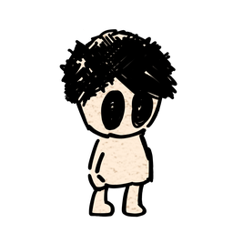
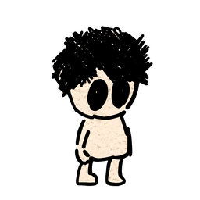
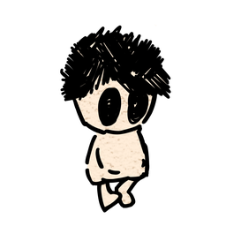
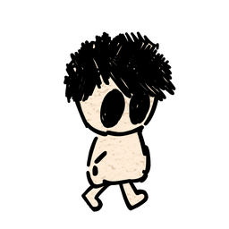
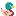
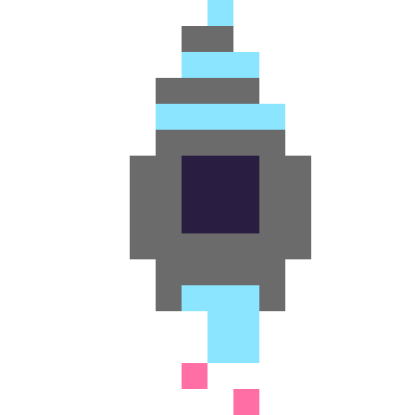
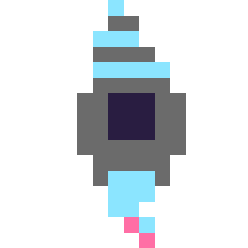
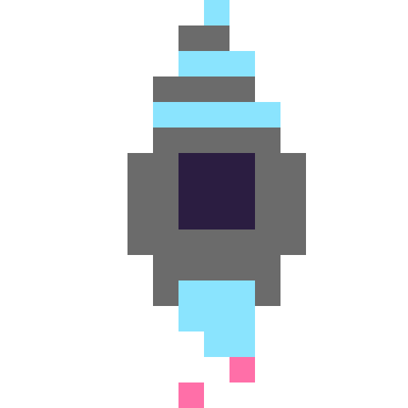
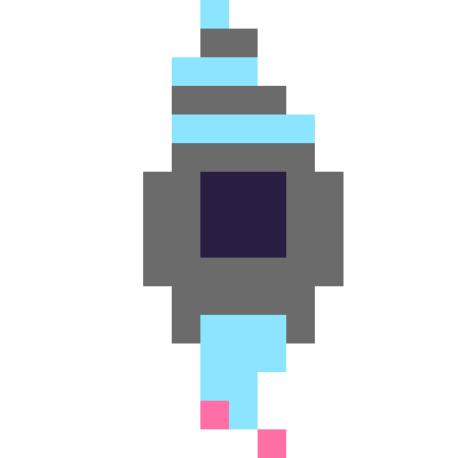

<!DOCTYPE html>
<html lang="ja">
<head>
    <meta charset="UTF-8">
    <meta name="viewport" content="width=device-width, initial-scale=1.0">
    <title>A-フォント比較・M PLUS 2 | 矢追陽平 Portfolio</title>
    <link rel="icon" href="../Images/Rocket.png" type="image/png">
    <!-- 中身（content.html）は、フォントや CSS を待たずにすぐ読み込み始める（shared/content.js がこれを使う）。
         公開用のトップページ（リポジトリ直下の index.html）は build.sh がこのファイルから作り、置き場所に合わせて '../' を外す。 -->
    <script>
        window.PORTFOLIO_SOURCE = '../content.html';
        window.portfolioSource = fetch(window.PORTFOLIO_SOURCE, { cache: 'no-cache' }).then(response => response.text());
    </script>
    <!-- 顔写真も、中身（content.html）が届くのを待たずに読み込み始める。プロフィールを出すときには届いていて、一度に出る。
         content.html の顔写真（.flip-card-front img）を差し替えたら、ここも同じ画像にする（tests/photo-preload.test.cjs で確かめる）。 -->
    <link rel="preload" as="image" href="../Images/YoheiYaoi-600.jpg" fetchpriority="high">
    <link rel="preconnect" href="https://fonts.googleapis.com">
    <link rel="preconnect" href="https://fonts.gstatic.com" crossorigin>
    <link rel="stylesheet" href="shared/base.css">
    <!--
        スキン（見た目違い）の作り方
        ・</head> の直前に、スキンの CSS と設定の JS（window.SKIN を決める）を足す。HTML の書き換えはしない。
        ・window.SKIN で変えられるもの（書かなかった項目は既定のまま）
            layout   : 'sections'（既定。サイドバーに中の項目も出す）
                       'tabs'    （選んだ大項目の中の項目だけ出す）
                       'flat'    （サイドバーに中の項目を出さない）
            text     : 画面の言葉。下の TEXT の項目名で上書きする
            iconColor: SNS アイコンの色（16進数6桁、# なし）
            mail     : 'button'（既定。メールを開くボタン）か 'text'（選んでコピーできる文字）
        ・CSS から使える目印
            body[data-layout][data-section="about|works|research"][data-page="works/zelly-swipe" など]
            .menu-group[data-section][data-active]、.menu-label（大項目へのリンク）、.menu-list a.active
            色分け用の [data-index]（0 始まり）と [data-tone]（0〜3）。既定の色は下の CSS で決めている
            スキル li[data-level="1〜5"]（.skill-name / .gauge / .skill-word）
            経歴 .exp（.exp-period / .exp-role / .exp-org / .exp-more / .exp-links）
            リンク .link--work（作品へ）/ .link--external（外のサイト。印は .ext-mark）
            About の中の項目と研究は、1つずつのページ（#about/awards、#research/2 など）
        ・build.sh は行頭の </head> を目印に差し込むので、閉じタグ </head> は必ず1行に単独で書く
    -->
    <style>
        /*
         * 既定の見た目：ゲームのメニュー画面。
         * サイドバーはRPGのコマンドウィンドウ、中身はタイトルバー付きのウィンドウで統一する。
         * 色は今のサイトの4色（赤・オレンジ・水色・黄緑）。
         */
        :root {
            --bg: #e9edf5;
            --fg: #1c2238;
            --muted: #5d6680;
            --surface: #ffffff;
            --surface-2: #f2f4f9;
            --line: #d9deea;
            --navy: #1c2238;
            --navy-2: #2a3258;
            --cursor: #ffd84d;
            --red: #ff5a5a;
            --orange: #ffa51f;
            --sky: #4fb6e8;
            --green: #8fd11c;
            --accent: #2b78c5;
            --tag-bg: #f2f4f9;
            --tag-fg: #1c2238;
            --highlight-bg: #ffd84d;
            --highlight-fg: #1c2238;
            --sidebar-w: 312px;
            --radius: 12px;
        }

        /* 色分け：data-tone（0〜3）を今のサイトの4色に。スキンはここを上書きする */
        [data-tone="0"] { --k: var(--red); }
        [data-tone="1"] { --k: var(--orange); }
        [data-tone="2"] { --k: var(--sky); }
        [data-tone="3"] { --k: var(--green); }
        [data-section="about"] { --k: var(--green); }
        [data-section="works"] { --k: var(--orange); }
        [data-section="research"] { --k: var(--sky); }

        /* 方眼紙のようなドットの背景 */
        body {
            background-color: var(--bg);
            background-image: radial-gradient(rgba(28, 34, 56, .12) 1px, transparent 1.2px);
            background-size: 18px 18px;
        }

        /* ラベル（WORKS・No.01 など）は同じフォントで、字間を広げて小さく */
        .label { font-size: 12px; font-weight: 700; letter-spacing: .14em; text-transform: uppercase; }

        /* ---- サイドバー：コマンドウィンドウ ---- */
        .sidebar {
            position: fixed;
            inset: 16px auto 16px 16px;
            width: var(--sidebar-w);
            display: flex;
            flex-direction: column;
            background: var(--navy);
            color: #fff;
            border: 3px solid #fff;
            outline: 3px solid var(--navy);
            border-radius: var(--radius);
            overflow: hidden;
        }
        /* サイドバーの一番上の見出し「Youkin」（642×200 の比率で横幅いっぱい）。スクロールするのは下のメニューだけなので、ここは動かない。
           背景の模様が斜めに流れ、文字は1文字ずつ「黒い影とふち」「白い縁」「色」の3枚を重ねて、Y→o→u→k→i→n の順に跳ねる。
           いちばん上に、真上・真下の文字と同じ色の帯を黒い線で挟んだ枠（帯は外側2段が明るい色、内側1段が文字の色。色は文字と文字の真ん中でぱきっと変わる。動かない）を重ねる。
           画像（Images/sidebar-banner/）は、ページが出たときに全部そろっているよう、この HTML に直接埋め込んである。作り直したら python3 tools/inline-banner.py を実行する。 */
        .sidebar-banner { position: relative; display: block; flex-shrink: 0; aspect-ratio: 642 / 200; overflow: hidden; background: var(--sidebar-bg, #fff); }  /* 地はサイドバーと同じ色（模様の地は透明） */
        .sidebar-banner > * { position: absolute; inset: 0; width: 100%; height: 100%; image-rendering: pixelated; }
        /* 背景：つなぎ目のない模様（644×200）を縦横2枚分並べ、1枚分ずらし続ける */
        .banner-bg::before {
            content: ""; position: absolute; top: 0; left: 0;
            width: calc(200% * 644 / 642); height: 200%;
            background: url("") repeat 0 0 / 50% 50%;  /* banner: bg */
            image-rendering: pixelated;
            animation: banner-scroll 28s linear infinite;
        }
        @keyframes banner-scroll { to { transform: translate(-50%, -50%); } }
        .sidebar-banner .hop { animation: banner-hop 1.8s steps(1) infinite; animation-delay: var(--d); }
        @keyframes banner-hop { 0%, 20% { transform: translateY(-2%); } 21%, 100% { transform: none; } }
        @media (prefers-reduced-motion: reduce) {
            .banner-bg::before, .sidebar-banner .hop { animation: none; }
        }
        .player {
            display: flex;
            align-items: center;
            gap: 12px;
            padding: 16px 18px;
            border-bottom: 2px dashed rgba(255, 255, 255, .22);
            color: #fff;
            text-decoration: none;
        }
        .player img { width: 52px; height: 52px; border-radius: 8px; image-rendering: pixelated; background: #fff; border: 2px solid #fff; }
        .player strong { display: block; font-size: 16px; }
        .player .label { color: #aeb7d6; font-size: 11px; }

        .menu { flex: 1; min-height: 0; overflow-y: auto; overscroll-behavior: none; scrollbar-width: none; padding: 8px 10px 16px; }  /* 強く動かしても跳ね返らない */
        .menu::-webkit-scrollbar { display: none; }
        .menu-group { margin-top: 12px; }
        .menu-label { display: flex; align-items: center; gap: 10px; margin: 0 0 4px; padding: 2px 10px; color: var(--k); text-decoration: none; }
        .menu-label::after { content: ""; flex: 1; height: 2px; background: currentColor; opacity: .35; }
        .menu-list { list-style: none; margin: 0; padding: 0; }
        .menu-list a {
            position: relative;
            display: flex;
            align-items: baseline;
            gap: 10px;
            padding: 7px 10px 7px 28px;
            border-radius: 6px;
            color: #dfe4f3;
            text-decoration: none;
            font-size: 14px;
            line-height: 1.45;
        }
        .menu-list .no, .menu-list .year { font-size: 12px; color: #8790b3; flex-shrink: 0; font-variant-numeric: tabular-nums; }
        .menu-list .no { width: 1.6em; }
        .menu-list .year { margin-left: auto; }
        .menu-list a::before { content: "▶"; position: absolute; left: 10px; top: 9px; font-size: 10px; color: var(--cursor); opacity: 0; }
        .menu-list a:hover { background: var(--navy-2); color: #fff; }
        /* マウスのときだけ。スマホ（iPhone）では触れた見た目が変わると1回目のタップが「触れた」だけになり、2回押さないと開かないため */
        @media (hover: hover) and (pointer: fine) { .menu-list a:hover::before { opacity: .5; } }
        .menu-list a.active { background: var(--navy-2); color: #fff; font-weight: 700; }
        .menu-list a.active::before { opacity: 1; }

        /* 目次の開け閉めできるまとまり（全部スクロール版の「作品ページ」「研究ページ」）。左の「＞」が開くと下を向く */
        .menu-fold summary { display: flex; align-items: center; gap: 8px; padding: 6px 10px; border-radius: 4px; font-size: 14px; cursor: pointer; list-style: none; }
        .menu-fold summary::-webkit-details-marker { display: none; }
        .menu-fold summary::before { content: ""; width: 6px; height: 6px; border-right: 2px solid currentColor; border-bottom: 2px solid currentColor; transform: rotate(-45deg); transition: transform .16s ease; }
        .menu-fold details[open]:not([data-closing]) > summary::before { transform: rotate(45deg); }
        .menu-fold summary:hover { color: var(--section-fg, var(--accent)); }
        .menu-sub { padding-left: 16px; }

        /* layout: 'tabs' は選んだ大項目の中だけ、'flat' は中の項目を出さない */
        [data-layout="tabs"] .menu-group:not([data-active]) .menu-list { display: none; }
        [data-layout="flat"] .menu-list { display: none; }
        [data-layout="flat"] .menu-label { padding: 8px 10px; }

        /* ---- 右側 ---- */
        main { position: relative; margin-left: calc(var(--sidebar-w) + 32px); padding: 28px 40px 96px; }
        main > .page { position: relative; }
        .page--narrow { max-width: 920px; }
        @keyframes pop { from { opacity: 0; transform: translateY(6px); } to { opacity: 1; transform: none; } }
        .page-head { margin: 4px 0 22px; }
        .page-head .label { color: var(--k, var(--accent)); }
        .page-head h1 { margin: 4px 0 0; font-size: clamp(26px, 3.2vw, 36px); font-weight: 900; line-height: 1.3; }
        .page-head p { margin: 6px 0 0; color: var(--muted); }
        .back { display: inline-block; margin-bottom: 8px; font-size: 14px; font-weight: 700; color: var(--accent); text-decoration: none; }
        .back:hover { text-decoration: underline; }

        /* すべての中身はこのウィンドウ（.block）に入れる */
        .window { background: var(--surface); border: 3px solid var(--navy); border-radius: var(--radius); box-shadow: 0 5px 0 rgba(28, 34, 56, .16); scroll-margin-top: 20px; }
        .window-title {
            display: flex;
            align-items: center;
            gap: 10px;
            margin: 0;
            padding: 8px 16px;
            background: var(--navy);
            color: #fff;
            border-radius: calc(var(--radius) - 4px) calc(var(--radius) - 4px) 0 0;
        }
        .window-title::before { content: ""; width: 10px; height: 10px; background: var(--k, var(--cursor)); flex-shrink: 0; }
        .window-title .count { margin-left: auto; color: #aeb7d6; letter-spacing: .04em; }
        .window-body { padding: 18px 22px; }
        .stack { display: grid; gap: 20px; align-content: start; }

        /* About：プロフィール */
        .profile { display: grid; grid-template-columns: 190px 1fr; gap: 22px; align-items: start; }
        .portrait { position: relative; aspect-ratio: 1; border: 3px solid var(--navy); border-radius: var(--radius); overflow: hidden; background: #fff; }
        .portrait img { position: absolute; inset: 0; width: 100%; height: 100%; object-fit: cover; transition: opacity .2s ease; }
        .portrait .pixel { opacity: 0; image-rendering: pixelated; }
        @media (hover: hover) and (pointer: fine) { .portrait:hover .pixel { opacity: 1; } }
        .profile-name { margin: 0 0 8px; font-size: 22px; }
        .profile-text { margin: 0; }
        /* SNS とメールは段を分ける */
        .contacts { display: grid; gap: 8px; margin-top: 14px; }
        .contacts-social, .contacts-mail { display: flex; flex-wrap: wrap; gap: 8px; }
        .contacts a {
            display: inline-flex;
            align-items: center;
            gap: 8px;
            padding: 6px 12px;
            border: 2px solid var(--navy);
            border-radius: 8px;
            color: var(--fg);
            text-decoration: none;
            font-size: 13px;
            font-weight: 700;
        }
        .contacts a:hover { background: var(--navy); color: #fff; }
        .contacts img { width: 16px; height: 16px; }
        .contacts .mail { display: inline-flex; align-items: center; gap: 8px; padding: 6px 4px; font-size: 13px; }
        .contacts .mail > span { user-select: all; overflow-wrap: anywhere; min-width: 0; }
        .contacts .mail-icon { flex-shrink: 0; }
        /* すっきり版（?profile=simple）：目標を一言で出し、大学・所属・メールは見出し付きの3行。SNS はアイコンだけ */
        .profile--simple .profile-catch { margin: 0 0 6px; color: var(--section-fg, var(--accent)); font-size: 17px; font-weight: 700; line-height: 1.6; }
        .profile--simple .profile-facts { margin: 0; }
        .profile--simple .profile-facts > div { grid-template-columns: 3.5em minmax(0, 1fr); }
        .profile--simple .profile-facts dd { overflow-wrap: anywhere; }
        .profile--simple .contacts { margin-top: 12px; }
        .profile--simple .contacts-social a { width: 40px; height: 40px; padding: 0; justify-content: center; }
        .profile--simple .contacts-social img { width: 20px; height: 20px; }

        /* 技術スタック */
        /* アイコンだけを並べる（名前はマウスを乗せたときと読み上げで出る） */
        .tech-stack-list { list-style: none; margin: 0; padding: 0; display: flex; flex-wrap: wrap; gap: 18px; }
        .tech img { width: 44px; height: 44px; display: block; }
        /* アイコンは押せる札にする。押すと下に説明が開く */
        .tech > button { display: grid; place-items: center; width: 56px; height: 56px; padding: 0; border: 2px solid var(--line); border-radius: 8px; background: var(--surface); cursor: pointer; }
        .tech > button img { width: 36px; height: 36px; }
        .tech > button:hover, .tech > button[aria-expanded="true"] { border-color: var(--fg); }
        .tech-stack-list { gap: 10px; }
        .tech-detail { display: grid; grid-template-columns: minmax(0, 1fr) minmax(0, 1fr); gap: 8px 24px; margin-top: 12px; padding: 10px 16px; border: 2px solid var(--line); border-radius: 8px; background: var(--surface); font-size: 13px; line-height: 1.6; }
        .tech-detail[hidden] { display: none; }
        /* 説明の上の余白を、外へはみ出させずにこの中に含める（伸びる動きの最後に、余白のぶんだけ急に伸びないように） */
        .tech-details { display: flow-root; }
        /* 説明の窓はどの技術でも同じ高さ（C# の説明の高さ。押したときの処理で測って --tech-detail-h に書く） */
        .tech-detail { box-sizing: border-box; min-height: var(--tech-detail-h, 0); align-content: start; }
        .tech-detail > div:only-child { grid-column: 1 / -1; }
        .tech-detail-head { display: flex; flex-wrap: wrap; align-items: baseline; gap: 4px 12px; margin: 0 0 4px; }
        .tech-detail-head strong { font-size: 15px; }
        .tech-detail-head span { color: var(--muted); font-size: 12px; }
        .tech-detail-points { margin: 0; padding-left: 1.2em; }
        .tech-detail-label { margin: 0 0 6px; color: var(--muted); font-size: 12px; font-weight: 700; }
        .tech-detail-works { list-style: none; margin: 0; padding: 0; display: flex; flex-wrap: wrap; gap: 6px; }
        .tech-detail-works a { display: inline-block; padding: 1px 8px; border: 1px solid var(--line); border-radius: 999px; color: inherit; font-size: 12px; text-decoration: none; }
        .tech-detail-works a:hover { border-color: currentColor; }
        .tech-detail-more { align-self: center; color: var(--muted); font-size: 12px; }
        /* 草原のあるプロフィール（広い画面）では、説明を下の草原の上に重ね、ページの高さを変えない */
        @media (min-width: 961px) {
            .page.about > .stack:has([data-block="skills"]) { z-index: 3; }
            [data-block="skills"] .window-body { position: relative; }
            .tech-detail { position: absolute; left: 0; right: 0; top: 100%; margin-top: 10px; }
        }
        /* Skills：既定はブロックのゲージ。言葉（.skill-word）はスキンで出す */
        .skills { display: grid; grid-template-columns: repeat(3, 1fr); gap: 18px 24px; }
        .skill-group h3 { margin: 0 0 8px; color: var(--muted); }
        .skill-group ul { list-style: none; margin: 0; padding: 0; display: grid; gap: 8px; font-size: 14px; }
        .skill-group li { display: grid; grid-template-columns: 1fr auto; align-items: center; gap: 10px; }
        .skill-word { display: none; }
        .gauge { display: flex; gap: 3px; }
        .gauge i { width: 12px; height: 12px; background: var(--line); }
        .gauge i.on { background: var(--k, var(--sky)); box-shadow: inset 0 -3px 0 rgba(0, 0, 0, .18); }

        /* 経歴（インターン・バイト） */
        .exp-list, .item-list { list-style: none; margin: 0; padding: 0; }
        .exp, .item { padding: 14px 0; border-bottom: 2px dotted var(--line); }
        .exp:first-child, .item:first-child { padding-top: 0; }
        .exp:last-child, .item:last-child { border-bottom: 0; padding-bottom: 0; }
        .exp-head { display: flex; flex-wrap: wrap; align-items: baseline; gap: 2px 8px; }
        .exp-role { margin: 0; font-size: 15px; }
        /* 「役割 / 会社名」を同じ大きさ・太さで1つの見出しのように並べる */
        .exp-org { color: var(--fg); font-size: 15px; font-weight: 700; }
        .exp-role + .exp-org::before { content: "/" / ""; margin-right: 8px; }
        .exp-period { margin-left: auto; color: var(--muted); font-size: 13px; }
        .exp-more summary { cursor: pointer; font-size: 13px; color: var(--accent); margin-top: 4px; font-weight: 700; -webkit-user-select: none; user-select: none; }
        .exp-content { display: flow-root; }
        .exp-more p { margin: 6px 0 0; font-size: 14px; line-height: 1.85; }
        .exp-more figure { margin: 10px 0 0; max-width: 340px; }
        .exp-more figure img { border-radius: 8px; border: 2px solid var(--navy); }
        .exp-more figcaption { font-size: 12px; color: var(--muted); }
        .exp-links, .item-links { display: flex; flex-wrap: wrap; gap: 14px; margin-top: 6px; font-size: 13px; }
        .item-text { font-weight: 700; font-size: 15px; }
        .awards .item-text::before { content: "★ "; color: var(--orange); }

        /* 作品一覧：上の2本は大きく、残りは3列 */
        .featured { display: grid; grid-template-columns: 1fr 1fr; gap: 18px; margin-bottom: 18px; }
        .grid { display: grid; grid-template-columns: repeat(3, 1fr); gap: 18px; }
        .card { position: relative; overflow: hidden; transition: transform .12s ease, box-shadow .12s ease; }
        .card:hover, .card:focus-within { transform: translateY(-4px); box-shadow: 0 9px 0 rgba(28, 34, 56, .16); }
        .card .thumb { position: relative; aspect-ratio: 16 / 9; background: #000; border-bottom: 3px solid var(--navy); }
        .card .thumb img, .card .thumb video { width: 100%; height: 100%; object-fit: cover; display: block; }
        .card .no { position: absolute; top: 8px; left: 8px; padding: 2px 8px; background: var(--navy); color: #fff; border-left: 6px solid var(--k); }
        .card .body { padding: 12px 14px 14px; }
        .card h3 { margin: 0; font-size: 16px; display: flex; justify-content: space-between; align-items: baseline; gap: 8px; }
        .card h3 small { font-size: 12px; color: var(--muted); font-weight: 500; }
        /* タイトルのリンクをカード全体に広げる */
        .card-link { color: inherit; text-decoration: none; }
        .card-link::after { content: ""; position: absolute; inset: 0; }
        .card-link:focus-visible { outline: none; }
        .card:has(.card-link:focus-visible) { outline: 3px solid var(--accent); outline-offset: 2px; }
        .card p { margin: 4px 0 0; font-size: 13px; color: var(--muted); }
        .featured .card h3 { font-size: 20px; }
        .featured .card p { font-size: 14px; }

        /* 作品・研究のページ：本文と、右のデータ欄 */
        .vplayer { position: relative; aspect-ratio: 16 / 9; border: 3px solid var(--navy); border-radius: var(--radius); overflow: hidden; background: #000; margin-bottom: 20px; }
        .vplayer video { width: 100%; height: 100%; display: block; object-fit: contain; background: #000; }
        /* 全編の準備ができるまで、作品一覧で読み込み済みの6秒ループを上に重ねて流し、全編が動き出したらふっと消す */
        .vplayer .vclip { position: absolute; inset: 0; transition: opacity .35s ease; }
        .vplayer .vclip[data-done] { opacity: 0; pointer-events: none; }
        /* 縦長の研究動画（Useless Machine など）は、横幅いっぱいにせず縦長の枠で出す。 */
        .vplayer[data-portrait] { aspect-ratio: 9 / 16; width: min(100%, calc(70vh * 9 / 16)); }
        .vsound {
            position: absolute;
            top: 12px;
            right: 12px;
            display: grid;
            place-items: center;
            width: 44px;
            height: 44px;
            border: 2px solid #fff;
            border-radius: 50%;
            background: rgba(28, 34, 56, .6);
            color: #fff;
            padding: 0;
            cursor: pointer;
        }
        .vsound:hover { background: #fff; color: var(--navy); }
        .vsound svg { display: block; width: 24px; height: 24px; pointer-events: none; }
        @media (hover: hover) and (pointer: fine) {
            .vsound { opacity: 0; pointer-events: none; transition: opacity .15s ease; }
            .vplayer:hover .vsound, .vsound:focus-visible { opacity: 1; pointer-events: auto; }
        }
        @media (prefers-reduced-motion: reduce) {
            .vsound { transition: none; }
        }

        .detail { display: grid; grid-template-columns: minmax(0, 1fr) 300px; gap: 20px; align-items: start; }
        .game .detail { grid-template-columns: 300px minmax(0, 1fr); }
        .prose p { margin: 0; font-size: 15px; line-height: 1.95; }
        .prose p + p { margin-top: 1em; }
        .data dl { margin: 0; display: grid; gap: 12px; font-size: 14px; }
        .data dt { color: var(--muted); font-size: 12px; font-weight: 700; letter-spacing: .06em; }
        .data dd { margin: 2px 0 0; }
        .data .tags { margin: 0 0 16px; }
        .link-list { list-style: none; margin: 0; padding: 0; display: grid; gap: 8px; }
        .link-list a {
            display: block;
            padding: 9px 12px;
            border: 2px solid var(--navy);
            border-radius: 8px;
            color: var(--fg);
            text-decoration: none;
            font-size: 14px;
            font-weight: 700;
        }
        .link-list a:hover { background: var(--navy); color: #fff; }
        .tag { border-color: var(--line); font-weight: 700; }

        .research-item { scroll-margin-top: 20px; }
        .research-item + .research-item { margin-top: 40px; }
        .research-title { margin: 0 0 14px; font-size: 22px; }

        .pager { display: grid; grid-template-columns: 1fr 1fr; gap: 16px; margin-top: 36px; }
        .pager a { padding: 12px 16px; color: var(--fg); text-decoration: none; font-weight: 700; }
        .pager a:hover { background: var(--navy); color: #fff; }
        .pager .label { display: block; color: var(--muted); font-size: 11px; }
        .pager a:hover .label { color: #aeb7d6; }
        .pager .next { text-align: right; grid-column: 2; }

        .topbar { display: none; }

        /* ---- 画面が狭いとき ---- */
        @media (max-width: 1180px) {
            .detail, .game .detail { grid-template-columns: 1fr; }
            .detail .data { order: -1; }
        }
        /* 全部スクロール版（?view=scroll）：パソコンでも About me → 作品一覧 → 研究一覧 を続けて見せる。区切りを広めにあける */
        @media (min-width: 961px) {
            body[data-view="scroll"] .home-part + .home-part { margin-top: 96px; }
            body[data-view="scroll"] main :is([id^="block-"], .home-part) { scroll-margin-top: 24px; }
            /* 技術スタックの説明は重ねず、インターンの「詳しく見る」と同じように下へ伸ばす（伸び縮みの動きは押したときの処理で付ける） */
            body[data-view="scroll"] .tech-detail { position: static; margin-top: 12px; }
        }
        /* 全部スクロール版では、受賞歴・インターン・メディア掲載の見出しを、ページの見出し（プロフィール）と同じ大きさにする */
        body[data-view="scroll"] .home-part[data-section="about"] :is([data-block="awards"], [data-block="internships"], [data-block="media"]) > .window-title {
            font-size: clamp(28px, 3.2vw, 38px);
        }
        @media (max-width: 960px) {
            .sidebar { inset: 64px 10px 10px 10px; width: auto; z-index: 30; transform: translateY(-120%); transition: transform .25s ease; }
            .menu-open .sidebar { transform: none; }
            .topbar {
                display: flex;
                align-items: center;
                justify-content: space-between;
                position: sticky;
                top: 0;
                z-index: 31;
                padding: 10px 14px;
                background: var(--navy);
                color: #fff;
            }
            .topbar-title { display: flex; align-items: center; min-width: 0; }
            .topbar .sidebar-banner { height: 44px; width: auto; }
            .topbar .sidebar-banner > * { width: 100%; height: 100%; border: 0; border-radius: 0; background: none; }
            .sidebar .sidebar-banner { display: none; }
            /* 1ページにまとめたスマホの表示：目次で選んだ場所が、上の帯に隠れないようにする */
            .home-part + .home-part { margin-top: 48px; }
            main :is([id^="block-"], .home-part) { scroll-margin-top: 88px; }
            .topbar button { border: 2px solid #fff; border-radius: 8px; background: none; color: #fff; font: inherit; font-weight: 700; padding: 4px 12px; }
            main { margin-left: 0; padding: 22px 16px 64px; }
            .profile { grid-template-columns: 1fr; }
            .portrait { width: 160px; }
            .grid { grid-template-columns: 1fr 1fr; }
            .featured { grid-template-columns: 1fr; }
            .skills { grid-template-columns: 1fr; }
        }
        @media (max-width: 600px) {
            /* スマホではインターンの見出しを2行に：1行目に役割、2行目に会社名（「/」は出さない。大きさと太さはそのまま） */
            .exp-head .exp-org { flex-basis: 100%; }
            .exp-role + .exp-org::before { content: none; }
            .grid, .pager { grid-template-columns: 1fr; }
            .pager .next { grid-column: auto; }
            .window-body { padding: 16px; }
        }
    </style>
    <link rel="stylesheet" href="shared/profile-character.css">
    <link href="https://fonts.googleapis.com/css2?family=M+PLUS+2:wght@400;500;700;800&display=swap" rel="stylesheet">
    <link rel="preload" href="a-skins/left.css" as="style">
    <link rel="preload" href="a-skins/store.css" as="style">
    <link rel="preload" href="a-skins/font-base.css" as="style">
    <link rel="stylesheet" href="a-skins/font-mplus.css">
    <script src="a-skins/store.js"></script>
</head>
<body>
    <div class="topbar">
        <div class="topbar-title" id="topbar-name"></div>
        <button type="button" aria-controls="sidebar" aria-expanded="false" id="menu-button"></button>
    </div>

    <aside class="sidebar" id="sidebar">
        <a class="sidebar-banner" href="#about" aria-label="Youkin（プロフィールへ）">
            <span class="banner-bg"></span>
            
            
            
            
            
            
            
            
            
            
            
            
            
            
            
            
            
            
            
        </a>
        <a class="player" href="#about" id="player"></a>
        <nav class="menu" aria-label="メニュー" id="menu"></nav>
    </aside>
    <script>
        // スマホの上の帯には、サイドバーの一番上の「Youkin」の見出しをそのまま出す（スマホの目次からは外す）。
        // 中身（content.html）の読み込みを待たずに、ページが出たときから見せる。
        document.getElementById('topbar-name').replaceChildren(document.querySelector('.sidebar .sidebar-banner').cloneNode(true));
    </script>

    <!-- 本文は下の JS が組み立てる。「読み込み中…」などの文字は出さない（一瞬でも見えると目立つため）。 -->
    <main id="main"></main>

    <script src="shared/content.js"></script>
    <script src="shared/ui.js"></script>
    <script src="shared/details-motion.js"></script>
    <script src="shared/menu-keyboard.js"></script>
    <script src="shared/profile-guests.js"></script>
    <script src="shared/profile-sky.js"></script>
    <script src="shared/profile-flight.js"></script>
    <script src="shared/profile-walk.js"></script>
    <script>
        const { esc, tagsHTML, thumbUrl, linkHTML } = PortfolioUI;

        // ---- スキンの設定（書かなかった項目は既定のまま） ----
        const SKIN = window.SKIN || {};
        const LAYOUT = ['sections', 'tabs', 'flat'].includes(SKIN.layout) ? SKIN.layout : 'sections';
        const TEXT = {
            job: 'Job : Unity Engineer',
            menu: 'MENU',
            // サイドバーの大項目
            about: 'About',
            works: 'Works',
            research: 'Research',
            // About の中の項目
            profile: 'プロフィール',
            awards: '受賞歴',
            internships: 'インターン・バイト経験',
            media: 'メディア掲載',
            // ウィンドウの見出し
            status: 'Status',
            skills: 'Tech Stack',
            data: 'Data',
            links: 'Links',
            researchBody: '研究内容',
            researchData: 'Data',
            // ページ上部のラベル
            worksList: '作品一覧',
            researchList: '研究一覧',
            worksPages: '作品ページ',
            researchPages: '研究ページ',
            worksLead: '',
            researchNo: 'Research No.',
            researchLab: '研究会',
            researchPeriod: '期間',
            back: '← 作品一覧へ戻る',
            backResearch: '← 研究一覧へ戻る',
            prev: '◀ Prev',
            next: 'Next ▶',
            more: '詳しく見る',
            count: n => `${n}件`,
            // スキルの段階（1〜5）の言葉
            skillLevels: ['', '学習中', '基礎', '応用', '習熟', '得意分野'],
            unmute: '音を出す',
            mute: '音を消す',
            soundLabel: '動画の音声',
            ...(SKIN.text || {}),
        };
        const ICON_COLOR = /^[0-9a-f]{6}$/i.test(SKIN.iconColor || '') ? SKIN.iconColor : '1c2238';
        const MAIL_AS_TEXT = SKIN.mail === 'text';

        // 開発期間に年が書かれていない作品の制作年（GitHub・コミット日・大会名から確認）
        const YEAR_FALLBACK = { 'sausage-smash': 2026, 'jiya-robot-tea': 2026, 'project-siro': 2026, 'zelly-swipe': 2026, 'frying-pan': 2026 };
        const yearOf = p => (/(\d{4})年/.exec(p.period) || [])[1] || YEAR_FALLBACK[p.id] || '';
        const no = i => String(i + 1).padStart(2, '0');
        // 色分けの目印（色そのものは CSS で決める）
        const tone = i => `data-index="${i}" data-tone="${i % 4}"`;

        // About の中の項目（今のサイトの PROFILE と同じ並び。研究は Research として独立）
        const ABOUT_SECTIONS = ['', 'awards', 'internships', 'media'];
        const aboutLabel = id => TEXT[id || 'profile'];

        // 作品一覧で大きく出す2本
        const FEATURED = ['sausage-smash', 'pintch-witch'];

        // 動く見本（6秒のループ）と、作品ページの全編動画の置き場所
        const CLIP_BASE = new URL('../Images/clips/', location.href).href;
        // アイコンは Devicon 2.16.0 の同じ素材をローカル配信し、外部接続待ちをなくす。
        const DEVICON = new URL('../Images/icons/devicon/', location.href).href;
        // 技術スタックのアイコンは、プロフィールと一緒に全部そろって出るよう、この HTML に埋め込んである（元は Images/icons/）。
        // 1つずつ読み込むと、作品一覧の画像やフォントと取り合いになり、遅い回線では数秒かけてバラバラに出てくるため。
        // 中身は tools/inline-tech-icons.py が書く。ここにないもの（足したばかりの技術）は、ファイルから読み込む。
        const TECH_ICONS = {
            // tech-icons: start
            csharp: "data:image/svg+xml,%3Csvg xmlns=%22http://www.w3.org/2000/svg%22 viewBox=%220 0 128 128%22%3E%3Cpath fill=%22%239B4F96%22 d=%22M115.4 30.7L67.1 2.9c-.8-.5-1.9-.7-3.1-.7-1.2 0-2.3.3-3.1.7l-48 27.9c-1.7 1-2.9 3.5-2.9 5.4v55.7c0 1.1.2 2.4 1 3.5l106.8-62c-.6-1.2-1.5-2.1-2.4-2.7z%22/%3E%3Cpath fill=%22%2368217A%22 d=%22M10.7 95.3c.5.8 1.2 1.5 1.9 1.9l48.2 27.9c.8.5 1.9.7 3.1.7 1.2 0 2.3-.3 3.1-.7l48-27.9c1.7-1 2.9-3.5 2.9-5.4V36.1c0-.9-.1-1.9-.6-2.8l-106.6 62z%22/%3E%3Cpath fill=%22%23fff%22 d=%22M85.3 76.1C81.1 83.5 73.1 88.5 64 88.5c-13.5 0-24.5-11-24.5-24.5s11-24.5 24.5-24.5c9.1 0 17.1 5 21.3 12.5l13-7.5c-6.8-11.9-19.6-20-34.3-20-21.8 0-39.5 17.7-39.5 39.5s17.7 39.5 39.5 39.5c14.6 0 27.4-8 34.2-19.8l-12.9-7.6zM97 66.2l.9-4.3h-4.2v-4.7h5.1L100 51h4.9l-1.2 6.1h3.8l1.2-6.1h4.8l-1.2 6.1h2.4v4.7h-3.3l-.9 4.3h4.2v4.7h-5.1l-1.2 6h-4.9l1.2-6h-3.8l-1.2 6h-4.8l1.2-6h-2.4v-4.7H97zm4.8 0h3.8l.9-4.3h-3.8l-.9 4.3z%22/%3E%3C/svg%3E",
            unity: "data:image/svg+xml,%3Csvg xmlns=%22http://www.w3.org/2000/svg%22 viewBox=%220 0 128 128%22%3E%3Cpath d=%22m63.991 128 51.702-29.855-19.817-11.461-20.26 11.704a1.151 1.151 0 0 1-1.125-.009 1.145 1.145 0 0 1-.568-.975V69.608c0-.819.424-1.56 1.133-1.968L99.13 53.737a1.119 1.119 0 0 1 1.124.009c.352.195.572.564.576.966V78.11l19.83 11.454V29.855L63.99 62.566Zm0 0%22/%3E%3Cpath fill=%22%234d4d4d%22 d=%22m52.397 98.401-20.27-11.718-19.832 11.46L63.991 128V62.566L7.34 29.854V89.56l19.825-11.45V54.714c.009-.401.225-.77.572-.966a1.13 1.13 0 0 1 1.13-.009L52.953 67.64a2.275 2.275 0 0 1 1.133 1.97v27.8a1.156 1.156 0 0 1-.565.98 1.131 1.131 0 0 1-1.124.012%22/%3E%3Cpath fill=%22gray%22 d=%22M68.959 0v22.9L89.22 34.597c.348.203.555.576.555.984 0 .403-.212.772-.555.975L65.137 50.468a2.302 2.302 0 0 1-2.27 0L38.791 36.556a1.122 1.122 0 0 1-.56-.975 1.127 1.127 0 0 1 .56-.984L59.048 22.9V0L7.339 29.855l56.652 32.711 56.665-32.71Zm0 0%22/%3E%3C/svg%3E",
            c: "data:image/svg+xml,%3Csvg xmlns=%22http://www.w3.org/2000/svg%22 viewBox=%220 0 128 128%22%3E%3Cpath fill=%22%23659AD3%22 d=%22M115.4 30.7L67.1 2.9c-.8-.5-1.9-.7-3.1-.7-1.2 0-2.3.3-3.1.7l-48 27.9c-1.7 1-2.9 3.5-2.9 5.4v55.7c0 1.1.2 2.4 1 3.5l106.8-62c-.6-1.2-1.5-2.1-2.4-2.7z%22/%3E%3Cpath fill=%22%2303599C%22 d=%22M10.7 95.3c.5.8 1.2 1.5 1.9 1.9l48.2 27.9c.8.5 1.9.7 3.1.7 1.2 0 2.3-.3 3.1-.7l48-27.9c1.7-1 2.9-3.5 2.9-5.4V36.1c0-.9-.1-1.9-.6-2.8l-106.6 62z%22/%3E%3Cpath fill=%22%23fff%22 d=%22M85.3 76.1C81.1 83.5 73.1 88.5 64 88.5c-13.5 0-24.5-11-24.5-24.5s11-24.5 24.5-24.5c9.1 0 17.1 5 21.3 12.5l13-7.5c-6.8-11.9-19.6-20-34.3-20-21.8 0-39.5 17.7-39.5 39.5s17.7 39.5 39.5 39.5c14.6 0 27.4-8 34.2-19.8l-12.9-7.6z%22/%3E%3C/svg%3E",
            cpp: "data:image/svg+xml,%3Csvg viewBox=%220 0 128 128%22 xmlns=%22http://www.w3.org/2000/svg%22%3E %3Cpath fill=%22%2300599c%22 d=%22M118.766 95.82c.89-1.543 1.441-3.28 1.441-4.843V36.78c0-1.558-.55-3.297-1.441-4.84l-55.32 31.94Zm0 0%22/%3E %3Cpath fill=%22%23004482%22 d=%22m68.36 126.586 46.933-27.094c1.352-.781 2.582-2.129 3.473-3.672l-55.32-31.94L8.12 95.82c.89 1.543 2.121 2.89 3.473 3.672l46.933 27.094c2.703 1.562 7.13 1.562 9.832 0Zm0 0%22/%3E %3Cpath fill=%22%23659ad2%22 d=%22M118.766 31.941c-.891-1.546-2.121-2.894-3.473-3.671L68.359 1.172c-2.703-1.563-7.129-1.563-9.832 0L11.594 28.27C8.89 29.828 6.68 33.66 6.68 36.78v54.196c0 1.562.55 3.3 1.441 4.843L63.445 63.88Zm0 0%22/%3E %3Cpath fill=%22%23fff%22 d=%22M63.445 26.035c-20.867 0-37.843 16.977-37.843 37.844s16.976 37.844 37.843 37.844c13.465 0 26.024-7.247 32.77-18.91L79.84 73.335c-3.38 5.84-9.66 9.465-16.395 9.465-10.433 0-18.922-8.488-18.922-18.922 0-10.434 8.49-18.922 18.922-18.922 6.73 0 13.017 3.629 16.39 9.465l16.38-9.477c-6.75-11.664-19.305-18.91-32.77-18.91zM92.88 57.57v4.207h-4.207v4.203h4.207v4.207h4.203V65.98h4.203v-4.203h-4.203V57.57H92.88zm15.766 0v4.207h-4.204v4.203h4.204v4.207h4.207V65.98h4.203v-4.203h-4.203V57.57h-4.207z%22/%3E %3C/svg%3E",
            python: "data:image/svg+xml,%3Csvg xmlns=%22http://www.w3.org/2000/svg%22 viewBox=%220 0 128 128%22%3E%3ClinearGradient id=%22python-original-a%22 gradientUnits=%22userSpaceOnUse%22 x1=%2270.252%22 y1=%221237.476%22 x2=%22170.659%22 y2=%221151.089%22 gradientTransform=%22matrix(.563 0 0 -.568 -29.215 707.817)%22%3E%3Cstop offset=%220%22 stop-color=%22%235A9FD4%22/%3E%3Cstop offset=%221%22 stop-color=%22%23306998%22/%3E%3C/linearGradient%3E%3ClinearGradient id=%22python-original-b%22 gradientUnits=%22userSpaceOnUse%22 x1=%22209.474%22 y1=%221098.811%22 x2=%22173.62%22 y2=%221149.537%22 gradientTransform=%22matrix(.563 0 0 -.568 -29.215 707.817)%22%3E%3Cstop offset=%220%22 stop-color=%22%23FFD43B%22/%3E%3Cstop offset=%221%22 stop-color=%22%23FFE873%22/%3E%3C/linearGradient%3E%3Cpath fill=%22url(%23python-original-a)%22 d=%22M63.391 1.988c-4.222.02-8.252.379-11.8 1.007-10.45 1.846-12.346 5.71-12.346 12.837v9.411h24.693v3.137H29.977c-7.176 0-13.46 4.313-15.426 12.521-2.268 9.405-2.368 15.275 0 25.096 1.755 7.311 5.947 12.519 13.124 12.519h8.491V67.234c0-8.151 7.051-15.34 15.426-15.34h24.665c6.866 0 12.346-5.654 12.346-12.548V15.833c0-6.693-5.646-11.72-12.346-12.837-4.244-.706-8.645-1.027-12.866-1.008zM50.037 9.557c2.55 0 4.634 2.117 4.634 4.721 0 2.593-2.083 4.69-4.634 4.69-2.56 0-4.633-2.097-4.633-4.69-.001-2.604 2.073-4.721 4.633-4.721z%22 transform=%22translate(0 10.26)%22/%3E%3Cpath fill=%22url(%23python-original-b)%22 d=%22M91.682 28.38v10.966c0 8.5-7.208 15.655-15.426 15.655H51.591c-6.756 0-12.346 5.783-12.346 12.549v23.515c0 6.691 5.818 10.628 12.346 12.547 7.816 2.297 15.312 2.713 24.665 0 6.216-1.801 12.346-5.423 12.346-12.547v-9.412H63.938v-3.138h37.012c7.176 0 9.852-5.005 12.348-12.519 2.578-7.735 2.467-15.174 0-25.096-1.774-7.145-5.161-12.521-12.348-12.521h-9.268zM77.809 87.927c2.561 0 4.634 2.097 4.634 4.692 0 2.602-2.074 4.719-4.634 4.719-2.55 0-4.633-2.117-4.633-4.719 0-2.595 2.083-4.692 4.633-4.692z%22 transform=%22translate(0 10.26)%22/%3E%3CradialGradient id=%22python-original-c%22 cx=%221825.678%22 cy=%22444.45%22 r=%2226.743%22 gradientTransform=%22matrix(0 -.24 -1.055 0 532.979 557.576)%22 gradientUnits=%22userSpaceOnUse%22%3E%3Cstop offset=%220%22 stop-color=%22%23B8B8B8%22 stop-opacity=%22.498%22/%3E%3Cstop offset=%221%22 stop-color=%22%237F7F7F%22 stop-opacity=%220%22/%3E%3C/radialGradient%3E%3Cpath opacity=%22.444%22 fill=%22url(%23python-original-c)%22 d=%22M97.309 119.597c0 3.543-14.816 6.416-33.091 6.416-18.276 0-33.092-2.873-33.092-6.416 0-3.544 14.815-6.417 33.092-6.417 18.275 0 33.091 2.872 33.091 6.417z%22/%3E%3C/svg%3E",
            git: "data:image/svg+xml,%3Csvg xmlns=%22http://www.w3.org/2000/svg%22 viewBox=%220 0 128 128%22%3E%3Cpath fill=%22%23F34F29%22 d=%22M124.737 58.378L69.621 3.264c-3.172-3.174-8.32-3.174-11.497 0L46.68 14.71l14.518 14.518c3.375-1.139 7.243-.375 9.932 2.314 2.703 2.706 3.461 6.607 2.294 9.993l13.992 13.993c3.385-1.167 7.292-.413 9.994 2.295 3.78 3.777 3.78 9.9 0 13.679a9.673 9.673 0 01-13.683 0 9.677 9.677 0 01-2.105-10.521L68.574 47.933l-.002 34.341a9.708 9.708 0 012.559 1.828c3.778 3.777 3.778 9.898 0 13.683-3.779 3.777-9.904 3.777-13.679 0-3.778-3.784-3.778-9.905 0-13.683a9.65 9.65 0 013.167-2.11V47.333a9.581 9.581 0 01-3.167-2.111c-2.862-2.86-3.551-7.06-2.083-10.576L41.056 20.333 3.264 58.123a8.133 8.133 0 000 11.5l55.117 55.114c3.174 3.174 8.32 3.174 11.499 0l54.858-54.858a8.135 8.135 0 00-.001-11.501z%22/%3E%3C/svg%3E",
            github: "data:image/svg+xml,%3Csvg xmlns=%22http://www.w3.org/2000/svg%22 viewBox=%220 0 128 128%22%3E%3Cg fill=%22%23181616%22%3E%3Cpath fill-rule=%22evenodd%22 clip-rule=%22evenodd%22 d=%22M64 5.103c-33.347 0-60.388 27.035-60.388 60.388 0 26.682 17.303 49.317 41.297 57.303 3.017.56 4.125-1.31 4.125-2.905 0-1.44-.056-6.197-.082-11.243-16.8 3.653-20.345-7.125-20.345-7.125-2.747-6.98-6.705-8.836-6.705-8.836-5.48-3.748.413-3.67.413-3.67 6.063.425 9.257 6.223 9.257 6.223 5.386 9.23 14.127 6.562 17.573 5.02.542-3.903 2.107-6.568 3.834-8.076-13.413-1.525-27.514-6.704-27.514-29.843 0-6.593 2.36-11.98 6.223-16.21-.628-1.52-2.695-7.662.584-15.98 0 0 5.07-1.623 16.61 6.19C53.7 35 58.867 34.327 64 34.304c5.13.023 10.3.694 15.127 2.033 11.526-7.813 16.59-6.19 16.59-6.19 3.287 8.317 1.22 14.46.593 15.98 3.872 4.23 6.215 9.617 6.215 16.21 0 23.194-14.127 28.3-27.574 29.796 2.167 1.874 4.097 5.55 4.097 11.183 0 8.08-.07 14.583-.07 16.572 0 1.607 1.088 3.49 4.148 2.897 23.98-7.994 41.263-30.622 41.263-57.294C124.388 32.14 97.35 5.104 64 5.104z%22/%3E%3Cpath d=%22M26.484 91.806c-.133.3-.605.39-1.035.185-.44-.196-.685-.605-.543-.906.13-.31.603-.395 1.04-.188.44.197.69.61.537.91zm2.446 2.729c-.287.267-.85.143-1.232-.28-.396-.42-.47-.983-.177-1.254.298-.266.844-.14 1.24.28.394.426.472.984.17 1.255zM31.312 98.012c-.37.258-.976.017-1.35-.52-.37-.538-.37-1.183.01-1.44.373-.258.97-.025 1.35.507.368.545.368 1.19-.01 1.452zm3.261 3.361c-.33.365-1.036.267-1.552-.23-.527-.487-.674-1.18-.343-1.544.336-.366 1.045-.264 1.564.23.527.486.686 1.18.333 1.543zm4.5 1.951c-.147.473-.825.688-1.51.486-.683-.207-1.13-.76-.99-1.238.14-.477.823-.7 1.512-.485.683.206 1.13.756.988 1.237zm4.943.361c.017.498-.563.91-1.28.92-.723.017-1.308-.387-1.315-.877 0-.503.568-.91 1.29-.924.717-.013 1.306.387 1.306.88zm4.598-.782c.086.485-.413.984-1.126 1.117-.7.13-1.35-.172-1.44-.653-.086-.498.422-.997 1.122-1.126.714-.123 1.354.17 1.444.663zm0 0%22/%3E%3C/g%3E%3C/svg%3E",
            blender: "data:image/svg+xml,%3Csvg viewBox=%220 0 128 128%22 xmlns=%22http://www.w3.org/2000/svg%22%3E%3Cpath d=%22M66.332 70.032c.24-4.242 2.327-7.987 5.485-10.634 3.094-2.602 7.248-4.193 11.809-4.193 4.537 0 8.69 1.59 11.78 4.193 3.163 2.647 5.237 6.392 5.485 10.634.24 4.35-1.523 8.41-4.605 11.417-3.158 3.05-7.627 4.977-12.66 4.977-5.037 0-9.526-1.915-12.664-4.977-3.094-3.006-4.853-7.044-4.606-11.397zm0 0%22 fill=%22%23235785%22/%3E%3Cpath d=%22M39.245 79.002c.028 1.66.564 4.89 1.36 7.404 1.682 5.336 4.537 10.273 8.49 14.599 4.062 4.465 9.074 8.055 14.85 10.61 6.073 2.67 12.665 4.037 19.505 4.037 6.84-.009 13.432-1.4 19.504-4.102 5.776-2.582 10.79-6.168 14.85-10.657 3.974-4.374 6.82-9.307 8.491-14.647a37 37 0 001.595-8.163c.208-2.69.12-5.405-.263-8.12a37.535 37.535 0 00-5.417-14.714c-2.574-4.15-5.916-7.76-9.89-10.813l.012-.004-39.955-30.506c-.036-.028-.068-.056-.104-.08-2.619-2.002-7.044-1.994-9.91.008-2.914 2.031-3.25 5.385-.656 7.496l-.012.008 16.682 13.484-50.789.051h-.068c-4.197.004-8.239 2.739-9.03 6.213-.82 3.521 2.035 6.46 6.412 6.46l-.008.016 25.736-.048L4.58 82.524c-.056.044-.12.088-.176.132C.069 85.95-1.33 91.446 1.4 94.9c2.778 3.522 8.666 3.546 13.047.02L39.505 74.51s-.368 2.758-.336 4.397zm64.56 9.219c-5.168 5.228-12.416 8.21-20.227 8.21-7.831.012-15.079-2.918-20.248-8.142-2.526-2.559-4.377-5.473-5.528-8.591a22.202 22.202 0 01-1.271-9.602 22.446 22.446 0 012.778-9.039c1.507-2.714 3.59-5.18 6.14-7.267 5.033-4.058 11.42-6.28 18.1-6.28 6.709-.008 13.097 2.174 18.13 6.236 2.55 2.075 4.625 4.529 6.14 7.243a22.302 22.302 0 012.774 9.043 22.313 22.313 0 01-1.271 9.598c-1.147 3.142-3.002 6.056-5.533 8.615zm0 0%22 fill=%22%23e87500%22/%3E%3C/svg%3E",
            figma: "data:image/svg+xml,%3Csvg xmlns=%22http://www.w3.org/2000/svg%22 viewBox=%220 0 128 128%22%3E%3Cpath fill=%22%230acf83%22 d=%22M45.5 129c11.9 0 21.5-9.6 21.5-21.5V86H45.5C33.6 86 24 95.6 24 107.5S33.6 129 45.5 129zm0 0%22/%3E%3Cpath fill=%22%23a259ff%22 d=%22M24 64.5C24 52.6 33.6 43 45.5 43H67v43H45.5C33.6 86 24 76.4 24 64.5zm0 0%22/%3E%3Cpath fill=%22%23f24e1e%22 d=%22M24 21.5C24 9.6 33.6 0 45.5 0H67v43H45.5C33.6 43 24 33.4 24 21.5zm0 0%22/%3E%3Cpath fill=%22%23ff7262%22 d=%22M67 0h21.5C100.4 0 110 9.6 110 21.5S100.4 43 88.5 43H67zm0 0%22/%3E%3Cpath fill=%22%231abcfe%22 d=%22M110 64.5c0 11.9-9.6 21.5-21.5 21.5S67 76.4 67 64.5 76.6 43 88.5 43 110 52.6 110 64.5zm0 0%22/%3E%3C/svg%3E",
            notion: "data:image/svg+xml,%3Csvg xmlns=%22http://www.w3.org/2000/svg%22 viewBox=%220 0 128 128%22%3E%3Cpath d=%22m76.25.25 13.059.086c.246.191.445.316.656.41 2.367 1.07 4.933 1.836 7.066 3.258 6.184 4.11 12.223 8.441 18.258 12.77 2.805 2.007 5.57 4.097 8.156 6.37 1.922 1.688 2.785 4.083 2.79 6.637l-.005 80.371c-.003 1.121-.195 2.274-.507 3.352-1.418 4.914-4.563 8.277-9.512 9.59-2.61.691-5.367.906-8.074 1.129-4.223.351-8.461.523-12.692.777l-8.004.5-12.816.754-7.879.492-12.941.75-6.688.274c-.215.011-.414.312-.617.48-5.09 0-10.176 0-15.309-.082-.246-.195-.433-.352-.652-.414-3.102-.899-5.703-2.613-7.703-5.102-2.77-3.441-5.402-6.988-8.066-10.511-3.274-4.329-6.633-8.594-9.727-13.047a15.47 15.47 0 0 1-2.79-8.875 72122.4 72122.4 0 0 1 .009-71.211c0-.684.12-1.375.238-2.055C3.742 9.645 9.152 5.746 15.586 5.023c3.34-.375 6.703-.543 10.059-.765l8.87-.512 3.813-.25 11.5-.992 6.375-.5 10.559-.75 8.87-.524c.216-.015.415-.312.618-.48M25.945 114.184c.532.691 1.125 1.347 1.59 2.082 2.254 3.527 5.485 4.808 9.59 4.535l27.809-1.656 31.296-1.891 15.582-1.004c4.618-.371 6.848-2.867 6.938-7.5v-1l.035-75.863c.004-2.285-.785-3.883-2.613-5.16l-22.024-15.52c-3.543-2.578-7.304-3.781-11.66-3.437L57.824 9.594l-25.789 1.902-16.187 1.262c-3.27.3-5.297 2.3-5.883 5.508a13.868 13.868 0 0 0-.207 2.48l-.067 66.242c-.023 4.34 1.305 7.95 3.903 11.27l12.351 15.926zm0 0%22 fill=%22%23fff%22/%3E%3Cpath d=%22m25.887 114.117-12.293-15.86c-2.598-3.32-3.926-6.929-3.903-11.269l.067-66.242c0-.828.062-1.668.207-2.48.586-3.207 2.613-5.207 5.883-5.508l16.187-1.262 25.79-1.902L82.488 7.77c4.356-.344 8.117.859 11.66 3.437 7.262 5.285 14.66 10.383 22.024 15.52 1.828 1.277 2.617 2.875 2.613 5.16l-.035 75.867v1c-.09 4.629-2.32 7.125-6.938 7.496-5.187.418-10.386.688-15.582 1.004l-31.296 1.89-27.809 1.657c-4.105.273-7.336-1.008-9.59-4.535-.465-.735-1.058-1.391-1.648-2.149m6.406-45.992v33.488l.008 6.246c.054 2.801 1.426 4.196 4.226 4.356.703.039 1.414.015 2.121-.028l23.442-1.382 44.765-2.559c2.79-.156 4.079-1.379 4.34-4.144.051-.497.035-1 .035-1.5l.004-64.477c0-.375.012-.75-.011-1.125-.168-2.566-1.27-3.613-3.82-3.477l-23.071 1.329a43791.29 43791.29 0 0 0-32.418 1.898l-16.207.973c-2.066.132-3 1.023-3.312 3.043a10.64 10.64 0 0 0-.098 1.617l-.004 25.742m57.172-52.727c-1.957-1.062-4.082-1.414-6.27-1.293-3.363.184-6.726.461-10.09.704l-47.949 3.484c-1.449.105-2.906.21-4.336.469-.48.086-1.086.57-1.234 1.008-.11.308.375.93.73 1.27.657.628 1.414 1.155 2.13 1.722 1.699 1.34 3.507 2.562 5.066 4.043 2.957 2.808 6.398 3.457 10.34 3.172l31.035-1.946 33.41-2.004c.305-.015.61-.109 1.281-.234-.613-.637-.969-1.125-1.433-1.469a233.798 233.798 0 0 0-4.957-3.562 697.555 697.555 0 0 0-7.723-5.364zm0 0%22/%3E%3Cpath d=%22m32.293 68 .004-25.617c0-.54.016-1.086.098-1.617.312-2.02 1.246-2.91 3.312-3.043l16.207-.973 32.418-1.898 23.07-1.329c2.551-.136 3.653.914 3.82 3.477.024.375.012.75.012 1.125l-.004 64.477-.035 1.5c-.261 2.765-1.55 3.988-4.34 4.144l-44.765 2.559-23.442 1.382-2.12.028c-2.801-.16-4.173-1.555-4.227-4.352l-.008-6.25V68m45.766.066L65.191 48.461c-.449-.684-.89-.91-1.718-.82l-5.485.37-10.09.739c-2.48.227-3.98 2.559-3.293 4.977l5.344.457v43.293l-3.64 1.027c-1.614.476-2.305 1.836-1.762 3.574l12.308-.707 4.848-.398c2.09-.344 3.215-1.625 3.496-3.715l-6.73-1.535V63.16l.5.7 15.468 24.152a361.224 361.224 0 0 0 7.004 10.46c1.707 2.45 4.223 3.2 7.051 2.59 1.77-.378 3.469-1.097 5.203-1.656.903-.293 1.211-.832 1.207-1.844l-.03-44.5c0-2.601 0-2.601 2.573-3.12 2.602-.524 3.254-1.563 2.66-4.344l-15.55.945c-1.692.121-2.973 1.535-3.23 3.18-.126.793.038 1.23.987 1.285l4.708.52v30.179a7434.52 7434.52 0 0 0-8.961-13.637zM89.55 15.441a1122.8 1122.8 0 0 1 7.636 5.32 233.798 233.798 0 0 1 4.958 3.563c.464.344.82.832 1.433 1.469l-1.281.234-33.41 2.004-31.035 1.946c-3.942.285-7.383-.364-10.34-3.172-1.559-1.48-3.367-2.703-5.067-4.043-.715-.567-1.472-1.094-2.129-1.723-.355-.34-.84-.96-.73-1.27.148-.437.758-.921 1.234-1.007 1.43-.258 2.887-.364 4.336-.469l47.95-3.484 10.09-.704c2.187-.12 4.312.23 6.355 1.336zm0 0%22 fill=%22%23fff%22/%3E%3Cpath d=%22m78.113 68.14 8.907 13.567v-30.18l-4.707-.52c-.95-.054-1.114-.491-.989-1.284.258-1.645 1.54-3.059 3.23-3.18l15.551-.945c.594 2.78-.058 3.82-2.66 4.343-2.574.516-2.574.516-2.574 3.121l.031 44.5c.004 1.012-.304 1.551-1.207 1.844l-5.203 1.656c-2.828.606-5.344-.14-7.05-2.59a366.671 366.671 0 0 1-7.004-10.46l-15.47-24.153c-.109-.172-.234-.332-.5-.699v32.563l6.731 1.535c-.281 2.09-1.406 3.37-3.496 3.715-1.594.261-3.23.3-4.848.398l-12.308.707c-.543-1.738.148-3.098 1.762-3.574l3.64-1.027V54.184l-5.344-.457c-.687-2.418.813-4.75 3.293-4.977 3.356-.313 6.727-.504 10.09-.738 1.828-.125 3.664-.172 5.485-.371.828-.09 1.27.136 1.718.82l12.922 19.68zm0 0%22/%3E%3C/svg%3E",
            claude: "data:image/svg+xml,%3Csvg role=%22img%22 viewBox=%220 0 24 24%22 xmlns=%22http://www.w3.org/2000/svg%22 fill=%22%23D97757%22%3E%3Ctitle%3EClaude%3C/title%3E%3Cpath d=%22m4.7144 15.9555 4.7174-2.6471.079-.2307-.079-.1275h-.2307l-.7893-.0486-2.6956-.0729-2.3375-.0971-2.2646-.1214-.5707-.1215-.5343-.7042.0546-.3522.4797-.3218.686.0608 1.5179.1032 2.2767.1578 1.6514.0972 2.4468.255h.3886l.0546-.1579-.1336-.0971-.1032-.0972L6.973 9.8356l-2.55-1.6879-1.3356-.9714-.7225-.4918-.3643-.4614-.1578-1.0078.6557-.7225.8803.0607.2246.0607.8925.686 1.9064 1.4754 2.4893 1.8336.3643.3035.1457-.1032.0182-.0728-.164-.2733-1.3539-2.4467-1.445-2.4893-.6435-1.032-.17-.6194c-.0607-.255-.1032-.4674-.1032-.7285L6.287.1335 6.6997 0l.9957.1336.419.3642.6192 1.4147 1.0018 2.2282 1.5543 3.0296.4553.8985.2429.8318.091.255h.1579v-.1457l.1275-1.706.2368-2.0947.2307-2.6957.0789-.7589.3764-.9107.7468-.4918.5828.2793.4797.686-.0668.4433-.2853 1.8517-.5586 2.9021-.3643 1.9429h.2125l.2429-.2429.9835-1.3053 1.6514-2.0643.7286-.8196.85-.9046.5464-.4311h1.0321l.759 1.1293-.34 1.1657-1.0625 1.3478-.8804 1.1414-1.2628 1.7-.7893 1.36.0729.1093.1882-.0183 2.8535-.607 1.5421-.2794 1.8396-.3157.8318.3886.091.3946-.3278.8075-1.967.4857-2.3072.4614-3.4364.8136-.0425.0304.0486.0607 1.5482.1457.6618.0364h1.621l3.0175.2247.7892.522.4736.6376-.079.4857-1.2142.6193-1.6393-.3886-3.825-.9107-1.3113-.3279h-.1822v.1093l1.0929 1.0686 2.0035 1.8092 2.5075 2.3314.1275.5768-.3218.4554-.34-.0486-2.2039-1.6575-.85-.7468-1.9246-1.621h-.1275v.17l.4432.6496 2.3436 3.5214.1214 1.0807-.17.3521-.6071.2125-.6679-.1214-1.3721-1.9246L14.38 17.959l-1.1414-1.9428-.1397.079-.674 7.2552-.3156.3703-.7286.2793-.6071-.4614-.3218-.7468.3218-1.4753.3886-1.9246.3157-1.53.2853-1.9004.17-.6314-.0121-.0425-.1397.0182-1.4328 1.9672-2.1796 2.9446-1.7243 1.8456-.4128.164-.7164-.3704.0667-.6618.4008-.5889 2.386-3.0357 1.4389-1.882.929-1.0868-.0062-.1579h-.0546l-6.3385 4.1164-1.1293.1457-.4857-.4554.0608-.7467.2307-.2429 1.9064-1.3114Z%22/%3E%3C/svg%3E",
            codex: "data:image/svg+xml,%3Csvg role=%22img%22 viewBox=%220 0 24 24%22 xmlns=%22http://www.w3.org/2000/svg%22 fill=%22%231f1f22%22%3E%3Ctitle%3EOpenAI%3C/title%3E%3Cpath d=%22M22.2819 9.8211a5.9847 5.9847 0 0 0-.5157-4.9108 6.0462 6.0462 0 0 0-6.5098-2.9A6.0651 6.0651 0 0 0 4.9807 4.1818a5.9847 5.9847 0 0 0-3.9977 2.9 6.0462 6.0462 0 0 0 .7427 7.0966 5.98 5.98 0 0 0 .511 4.9107 6.051 6.051 0 0 0 6.5146 2.9001A5.9847 5.9847 0 0 0 13.2599 24a6.0557 6.0557 0 0 0 5.7718-4.2058 5.9894 5.9894 0 0 0 3.9977-2.9001 6.0557 6.0557 0 0 0-.7475-7.0729zm-9.022 12.6081a4.4755 4.4755 0 0 1-2.8764-1.0408l.1419-.0804 4.7783-2.7582a.7948.7948 0 0 0 .3927-.6813v-6.7369l2.02 1.1686a.071.071 0 0 1 .038.052v5.5826a4.504 4.504 0 0 1-4.4945 4.4944zm-9.6607-4.1254a4.4708 4.4708 0 0 1-.5346-3.0137l.142.0852 4.783 2.7582a.7712.7712 0 0 0 .7806 0l5.8428-3.3685v2.3324a.0804.0804 0 0 1-.0332.0615L9.74 19.9502a4.4992 4.4992 0 0 1-6.1408-1.6464zM2.3408 7.8956a4.485 4.485 0 0 1 2.3655-1.9728V11.6a.7664.7664 0 0 0 .3879.6765l5.8144 3.3543-2.0201 1.1685a.0757.0757 0 0 1-.071 0l-4.8303-2.7865A4.504 4.504 0 0 1 2.3408 7.872zm16.5963 3.8558L13.1038 8.364 15.1192 7.2a.0757.0757 0 0 1 .071 0l4.8303 2.7913a4.4944 4.4944 0 0 1-.6765 8.1042v-5.6772a.79.79 0 0 0-.407-.667zm2.0107-3.0231l-.142-.0852-4.7735-2.7818a.7759.7759 0 0 0-.7854 0L9.409 9.2297V6.8974a.0662.0662 0 0 1 .0284-.0615l4.8303-2.7866a4.4992 4.4992 0 0 1 6.6802 4.66zM8.3065 12.863l-2.02-1.1638a.0804.0804 0 0 1-.038-.0567V6.0742a4.4992 4.4992 0 0 1 7.3757-3.4537l-.142.0805L8.704 5.459a.7948.7948 0 0 0-.3927.6813zm1.0976-2.3654l2.602-1.4998 2.6069 1.4998v2.9994l-2.5974 1.4997-2.6067-1.4997Z%22/%3E%3C/svg%3E",            // tech-icons: end
        };
        // 押すと下に出る説明：使ってきた長さ（since）・得意なこと（points、プロフィールをスクロールさせないため3つまで・短く）。
        // 使った作品は、作品と研究の「使用技術」から word（正規表現）で見つけて自動で並べる。
        const TECH_STACK = [
            { id: 'csharp', name: 'C#', since: '約5年（中学3年から）', word: /C#|Unity/,
                points: ['MonoBehaviour に頼らないクラス設計', '非同期処理（Task・UniTask）', '勉強中：リアクティブ（UniRx）'] },
            { id: 'unity', name: 'Unity', since: '約5年（中学3年から）', word: /Unity/,
                points: ['DOTween を使った UI の演出', '2D（タイルマップ など）', 'MediaPipe・Meta・toio の SDK 連携'] },
            { id: 'c', name: 'C', since: '約半年', word: /(^|[^A-Za-z])C(?![+#A-Za-z])/,
                points: ['大学の授業と、C++ の勉強で使用', 'ターミナルで動く鬼ごっこゲームを制作'] },
            { id: 'cpp', name: 'C++', since: '約半年', word: /C\+\+/,
                points: ['SDL で描画するテトリスを制作', 'DirectX 11 と HLSL で描画・シェーダー', 'Arduino の制御'] },
            { id: 'python', name: 'Python', since: '約半年', word: /Python/,
                points: ['Pyxel でゲームを制作', '大学の授業で使用'] },
            { id: 'git', name: 'Git', since: '約1年', word: /Git(?!Hub)/,
                points: ['ブランチ運用・worktree', '共同開発の経験あり'] },
            { id: 'github', name: 'GitHub', since: '約1年', word: /GitHub/,
                points: ['GitHub Actions で CI/CD', '共同開発の経験あり'] },
            { id: 'blender', name: 'Blender', since: '高校の3年間', word: /Blender/,
                points: ['建物・乗り物・キャラクターのモデリング', 'ボーンとウェイトの設定', 'Life is Tech! で基本操作を教えています'] },
            { id: 'figma', name: 'Figma', since: '約2年', word: /Figma/,
                points: ['UI のデザイン', 'ZELLY SWIPE の素材をすべて制作', 'MCP と組み合わせたデザイン'] },
            { id: 'notion', name: 'Notion', word: /Notion/,
                points: ['よく使っています'] },
            // devicon にないものは Simple Icons から（Images/icons/simpleicons/）
            { id: 'claude', name: 'Claude', since: '2026年から', word: /Claude/, src: '../Images/icons/simpleicons/claude.svg',
                points: ['Claude Code（CLI）で開発', 'Artifacts などの機能も活用'] },
            { id: 'codex', name: 'Codex', since: '2026年から', word: /Codex/, src: '../Images/icons/simpleicons/openai.svg',
                points: ['CLI で開発'] },
        ];
        // 使った作品は、プロフィールに収まるよう4つまで出し、残りは数だけ出す
        const TECH_WORKS_MAX = 4;
        const MEDIA_BASE = 'https://youkin06.github.io/portfolio-media/videos/';

        document.body.dataset.layout = LAYOUT;

        loadPortfolio().then(data => {
            const projects = data.projects;
            // 研究は「【研究会名】テーマ」の形なので、研究会名とテーマに分ける。
            const research = data.research.map((r, i) => {
                const m = /^【(.+?)】(.+)$/.exec(r.org);
                const [body] = r.html.split(/<strong>\s*関連リンク/);
                const links = [...new DOMParser().parseFromString(r.html, 'text/html').querySelectorAll('a[href]')]
                    .map(a => ({ href: a.getAttribute('href'), label: a.textContent.replace(/\s+/g, ' ').trim() }));
                return { ...r, id: String(i + 1), lab: m ? m[1] : '', theme: m ? m[2] : r.org, body: body.replace(/(<br\s*\/?>\s*)+$/, ''), links };
            });
            const main = document.getElementById('main');

            // ---- サイドバー ----
            const avatar = data.profile.pixel || data.profile.photo;
            document.getElementById('player').innerHTML = `
                
                <div><strong>${esc(data.profile.name)}</strong><span class="label">${esc(TEXT.job)}</span></div>`;
            document.getElementById('menu-button').textContent = TEXT.menu;

            // 全部スクロール版（SKIN.view = 'scroll'。URL の ?view=scroll|pages で切り替えて確認できる）。パソコンでもスマホと同じ1本のスクロールにし、
            // 草原の代わりに、キャラクターを箱の上で歩かせる（ぼくのにっき：受賞歴の神ゲー創造主エボリューション、カモ：インターンの Unity メンター）。
            // 目次の作品・研究は1件ずつ並べず、「作品ページ」「研究ページ」の中に畳んでおく（押すと開く）。
            const ONE_SCROLL = (new URLSearchParams(location.search).get('view') || SKIN.view) === 'scroll';
            if (ONE_SCROLL) document.body.dataset.view = 'scroll';
            // 目次の中の、開け閉めできるまとまり（全部スクロール版の「作品ページ」「研究ページ」）
            const foldHTML = (label, items) => `
                    <li class="menu-fold"><details><summary>${esc(label)}</summary><ul class="menu-list menu-sub">${items}</ul></details></li>`;
            const groupHTML = (section, href, items) => `
                <div class="menu-group" data-section="${section}">
                    ${SKIN.menuHeadings ? `<h2 class="menu-label label">${esc(TEXT[section])}</h2>` : `<a class="menu-label label" href="${href}">${esc(TEXT[section])}</a>`}
                    ${LAYOUT === 'flat' ? '' : `<ul class="menu-list">${items}</ul>`}
                </div>`;
            // 「作品ページ」などのまとまりは、開くときも閉じるときも中の高さをなめらかに変える。
            // 目次を下までスクロールしてから閉じても、ガッと戻らず、縮むのに合わせて少しずつ上へ戻る。
            document.getElementById('menu').addEventListener('click', event => {
                const summary = event.target.closest('.menu-fold summary');
                if (!summary) return;
                event.preventDefault();
                const details = summary.parentElement;
                const list = details.querySelector('.menu-sub');
                const opening = details.hasAttribute('data-closing') || !details.open;
                const from = details.open ? list.getBoundingClientRect().height : 0;
                list.getAnimations().forEach(a => a.cancel());
                details.toggleAttribute('data-closing', !opening);
                details.open = true;
                const done = () => {
                    list.style.overflow = '';
                    if (!opening) { details.open = false; details.removeAttribute('data-closing'); }
                };
                if (matchMedia('(prefers-reduced-motion: reduce)').matches) { done(); return; }
                const to = opening ? list.getBoundingClientRect().height : 0;
                list.style.overflow = 'hidden';
                const animation = list.animate([{ height: `${from}px` }, { height: `${to}px` }], { duration: 240, easing: 'ease-in-out' });
                animation.onfinish = done;
            });
            document.getElementById('menu').innerHTML =
                groupHTML('about', '#about', ABOUT_SECTIONS.map(id =>
                    `<li><a href="${id ? `#about/${id}` : '#about'}" data-key="about/${id}">${esc(aboutLabel(id))}</a></li>`).join('')) +
                groupHTML('works', '#works',
                    `<li><a href="#works" data-key="works/">${esc(TEXT.worksList)}</a></li>` +
                    (ONE_SCROLL ? foldHTML : (label, items) => items)(TEXT.worksPages,
                        projects.map(p => `<li><a href="#works/${esc(p.id)}" data-key="works/${esc(p.id)}">${esc(p.title)}<span class="year">${yearOf(p)}</span></a></li>`).join(''))) +
                groupHTML('research', '#research',
                    `<li><a href="#research" data-key="research/">${esc(TEXT.researchList)}</a></li>` +
                    (ONE_SCROLL ? foldHTML : (label, items) => items)(TEXT.researchPages,
                        research.map(r => `<li><a href="#research/${r.id}" data-key="research/${r.id}">${esc(r.theme)}</a></li>`).join('')));

            // ---- 部品 ----
            // 本文中の「制作作品：〇〇」（#project-〇〇）は、そのゲームのページへ。
            const fixProjectLinks = html => html.replace(/href="#project-/g, 'href="#works/');
            const link = l => fixProjectLinks(linkHTML(l)).replace('class="link--internal" href="#works/', 'class="link--work" href="#works/');

            // title を null にすると見出しを出さない（ページの見出しと同じ言葉が重なるとき）
            const block = (key, title, body, count) => `
                <section class="window block" data-block="${key}" id="block-${key}">
                    ${title === null ? '' : `<h2 class="window-title label">${esc(title)}${count !== undefined ? `<span class="count">${esc(TEXT.count(count))}</span>` : ''}</h2>`}
                    <div class="window-body">${body}</div>
                </section>`;

            // 説明は「詳しく見る」で開く。一度に開くのは1つだけ。
            // 開閉の動きがあるスキンは details-motion.js が、ないスキンはブラウザの name 属性が、ほかの開いている項目を閉じる。
            const expHTML = i => `
                <li class="exp">
                    <div class="exp-head">
                        <h3 class="exp-role">${esc(i.role || i.org)}</h3>
                        ${i.role ? `<span class="exp-org">${esc(i.org)}</span>` : ''}
                        <time class="exp-period">${esc(i.period)}</time>
                    </div>
                    <details class="exp-more"${SKIN.detailsMotion ? '' : ' name="exp"'}><summary>${esc(TEXT.more)}</summary>
                        <div class="exp-content"><div class="exp-detail"${i.image ? ' data-photo' : ''}>
                            <div class="exp-copy">
                                <p>${fixProjectLinks(i.html)}</p>
                                ${i.links.length ? `<div class="exp-links">${i.links.map(link).join('')}</div>` : ''}
                            </div>
                            ${i.image ? `<figure><figcaption>${esc(i.image.caption)}</figcaption></figure>` : ''}
                        </div></div>
                    </details>
                </li>`;
            const itemHTML = a => `
                <li class="item"><span class="item-text">${esc(a.text)}</span>
                ${a.link ? `<div class="item-links">${link(a.link)}</div>` : ''}</li>`;

            const gaugeHTML = rating => `<span class="gauge" aria-hidden="true">${[1, 2, 3, 4, 5].map(n => `<i class="${n <= rating ? 'on' : ''}"></i>`).join('')}</span>`;
            const iconUrl = src => src.replace(/(cdn\.simpleicons\.org\/[^/]+)\/[0-9a-f]{6}$/i, `$1/${ICON_COLOR}`);
            const mailIcon = '<svg class="mail-icon" xmlns="http://www.w3.org/2000/svg" width="24" height="24" viewBox="0 0 24 24" fill="none" stroke="currentColor" stroke-width="1.75" stroke-linecap="round" stroke-linejoin="round" aria-hidden="true"><rect x="3" y="5" width="18" height="14" rx="2"/><path d="m3 6 9 7 9-7"/></svg>';

            // 段落ごとに <p> に分けて読みやすくする（元の文章は <br><br> で段落を区切っている）。
            const paragraphs = html => html.split(/(?:<br\s*\/?>\s*){2,}/).map(part => `<p>${part.trim()}</p>`).join('');

            const pageHead = (label, title, lead) => `
                <header class="page-head">${label ? `<div class="label">${esc(label)}</div>` : ''}<h1>${esc(title)}</h1>${lead ? `<p>${esc(lead)}</p>` : ''}</header>`;

            const pagerHTML = (prev, next, href, label) => `
                <nav class="pager" aria-label="前後">
                    ${prev ? `<a class="window prev" href="${href(prev)}"><span class="label">${esc(TEXT.prev)}</span>${esc(label(prev))}</a>` : ''}
                    ${next ? `<a class="window next" href="${href(next)}"><span class="label">${esc(TEXT.next)}</span>${esc(label(next))}</a>` : ''}
                </nav>`;

            // ---- About ----
            // 草原や箱の上を歩くキャラクター（ぼくのにっき・KamoRogue のカモ）。押すと頭の上に作品へのリンクが出る。
            const bokuGuest = `
                                <div class="profile-character" data-profile-guest>
                                  <button class="profile-guest-trigger" type="button" aria-label="ぼくのにっきのキャラクター：作品リンクを表示" aria-expanded="false"></button>
                                  <a class="profile-guest-link" href="#works/boku-no-nikki">ぼくのにっき<span>作品を見る →</span></a>
                                  <div class="profile-character-facing">
                                    <div class="profile-character-pose profile-character-idle">
                                      
                                      
                                    </div>
                                    <div class="profile-character-pose profile-character-walk">
                                      
                                      
                                    </div>
                                  </div>
                                </div>`;
            const kamoGuest = `
                                <div class="profile-kamo" data-profile-guest>
                                  <button class="profile-guest-trigger" type="button" aria-label="KamoRogueのキャラクター：作品リンクを表示" aria-expanded="false"></button>
                                  <a class="profile-guest-link" href="#works/project-6">KamoRogue<span>作品を見る →</span></a>
                                  <div class="profile-kamo-facing">
                                    <span class="profile-kamo-frame"></span>
                                    <span class="profile-kamo-frame"></span>
                                  </div>
                                </div>`;
            const profileCharacter = `
                            <div class="profile-meadow">
                              <div class="profile-sky" aria-hidden="true">
                                <span class="profile-stars"></span>
                                <span class="profile-sun"></span>
                                <span class="profile-moon"></span>
                                <span class="profile-cloud" style="--cloud-y: 60%; --cloud-time: 140s; --cloud-delay: -40s; --cloud-rest: 12%"></span>
                                <span class="profile-cloud" style="--cloud-y: 74%; --cloud-scale: .7; --cloud-time: 190s; --cloud-delay: -130s; --cloud-rest: 58%"></span>
                                <span class="profile-cloud" style="--cloud-y: 66%; --cloud-scale: .85; --cloud-time: 165s; --cloud-delay: -95s; --cloud-rest: 80%"></span>
                              </div>
                              <div class="profile-walkway">
                                ${bokuGuest}${kamoGuest}
                              </div>
                              <div class="profile-ground"></div>
                            </div>
                            <div class="profile-flight">
                              <div class="profile-depth-player" data-profile-guest>
                                <button class="profile-guest-trigger" type="button" aria-label="DEPTH DIARYのキャラクター：作品リンクを表示" aria-expanded="false"></button>
                                <a class="profile-guest-link" href="#works/depth-diary">DEPTH DIARY<span>作品を見る →</span></a>
                                <div class="profile-depth-player-facing">
                                  
                                  
                                  
                                  
                                </div>
                              </div>
                            </div>`;
            // ---- プロフィールの版（確認用：URL に ?profile=intro|numbers|history|simple。付けなければ今の形） ----
            const PROFILE_STYLE = new URLSearchParams(location.search).get('profile') || SKIN.profile || '';
            // ボタンと数字の見た目の案（確認用：URL に ?ui=a|b|c）。html[data-ui] に書き、CSS が見た目を変える。
            document.documentElement.dataset.ui = new URLSearchParams(location.search).get('ui') || SKIN.ui || '';
            // 「大学：〜」「所属：〜」「目標：〜」の行を、見出しと中身に分けて使う。
            const profileFacts = Object.fromEntries(data.profile.aboutHtml.split(/<br\s*\/?>/).map(line => {
                const t = line.replace(/<[^>]+>/g, '').trim();
                const i = t.indexOf('：');
                return i < 0 ? null : [t.slice(0, i), t.slice(i + 1).replace(/^「|」$/g, '')];
            }).filter(Boolean));
            const portraitHTML = () => `
                            <div class="portrait">
                                
                                ${data.profile.pixel ? `` : ''}
                            </div>`;
            const contactsHTML = () => `
                                <div class="contacts">
                                    <div class="contacts-social">${data.profile.socials.map(s => `<a class="social" href="${esc(s.href)}" target="_blank" rel="noopener noreferrer">${s.icon ? `` : ''}${esc(s.label)}</a>`).join('')}</div>
                                    <div class="contacts-mail">${data.profile.emails.map(m => MAIL_AS_TEXT ? `<span class="mail">${mailIcon}<span>${esc(m)}</span></span>` : `<a class="mail-button" href="mailto:${esc(m)}">${mailIcon}<span>${esc(m)}</span></a>`).join('')}</div>
                                </div>`;
            // 大学・所属・目標を、見出しと中身の同じ形の行で並べる。目標の中身だけ色を変える（goal = true のとき目標も出す）。
            const profileRole = (goal = false) => `
                                <dl class="profile-facts">${['大学', '所属', ...(goal ? ['目標'] : [])].filter(k => profileFacts[k]).map(k => `
                                    <div${k === '目標' ? ' class="profile-goal"' : ''}><dt>${k}</dt><dd>${esc(profileFacts[k])}</dd></div>`).join('')}
                                </dl>`;
            // 受賞歴・インターン・メディア掲載から、年月の分かるできごとを新しい順に拾う（プロフィールには新しい6件）。
            const profileHistory = () => [
                ...data.awards.map(a => ({ text: a.text.replace(/^\d{4}年\s*/, ''), when: a.text.match(/(\d{4})/) })),
                ...data.internships.map(i => ({ text: `${i.org} ${i.role || ''}`.trim() + (i.period.includes('予定') ? '（予定）' : ''), when: i.period.match(/(\d{4})年(\d{1,2})月/) })),
                ...data.media.map(a => ({ text: `${a.text.replace(/^[\d年月日]+\s*/, '')} に掲載`, when: a.text.match(/(\d{4})年(\d{1,2})月/) })),
            ].filter(e => e.when).map(e => ({ ...e, y: +e.when[1], m: +(e.when[2] || 0) }))
                .sort((a, b) => b.y - a.y || b.m - a.m);
            const PROFILE_VERSIONS = {
                // 今の形：「大学：〜」などの3行
                '': () => `
                        <div class="profile">${portraitHTML()}
                            <div>
                                <p class="profile-name">${esc(data.profile.name)}</p>
                                <p class="profile-text">${data.profile.aboutHtml}</p>${contactsHTML()}
                            </div>
                        </div>`,
                // ひとことと紹介文：大きなひとこと → 名前 → 紹介文 → 所属の札
                intro: () => `
                        <div class="profile profile--intro">${portraitHTML()}
                            <div>
                                <p class="profile-lead">${esc(data.hero.tagline)}</p>
                                <p class="profile-name">${esc(data.profile.name)}</p>
                                ${profileRole()}
                                <p class="profile-bio">Unity を中心に、VR やハンドトラッキング、2D アクションなど、いろいろな遊び方のゲームを作っています。目標は「${esc(profileFacts['目標'] || '')}」ことです。</p>${contactsHTML()}
                            </div>
                        </div>`,
                // 数字で見る：作品・受賞・インターン・メディア掲載・研究の数。押すとそのページへ。
                numbers: () => `
                        <div class="profile profile--numbers">${portraitHTML()}
                            <div>
                                <p class="profile-name">${esc(data.profile.name)}</p>
                                ${profileRole(true)}${contactsHTML()}
                            </div>
                        </div>
                        <ul class="profile-stats">${[
                            [data.projects.length, '作品', '#works', 'works'],
                            [data.awards.length, '受賞・入選', '#about/awards', 'about'],
                            [data.internships.length, 'インターン・バイト', '#about/internships', 'about'],
                            [data.media.length, 'メディア掲載', '#about/media', 'about'],
                            [data.research.length, '研究', '#research', 'research'],
                        ].map(([n, label, href, section]) => `<li data-to="${section}"><a href="${href}"><strong>${n}</strong><span>${esc(label)}</span></a></li>`).join('')}</ul>`,
                // これまで：受賞歴・インターン・メディア掲載を、新しい順の年表にする。
                history: () => `
                        <div class="profile profile--history">${portraitHTML()}
                            <div>
                                <p class="profile-name">${esc(data.profile.name)}</p>
                                ${profileRole(true)}${contactsHTML()}
                            </div>
                        </div>
                        <ol class="profile-history">${profileHistory().slice(0, 6).map(e => `<li><time>${e.y}${e.m ? `.${String(e.m).padStart(2, '0')}` : ''}</time><span>${esc(e.text)}</span></li>`).join('')}</ol>`,
                // すっきり：名前 → 目標 → 「大学」「所属」「メール」（大学のアドレスだけ）の3行。数字のタイルは出さず、その下に SNS をアイコンだけで並べる。
                simple: () => `
                        <div class="profile profile--simple">${portraitHTML()}
                            <div>
                                <p class="profile-name">${esc(data.profile.name)}</p>
                                ${profileFacts['目標'] ? `<p class="profile-catch">${esc(profileFacts['目標'])}</p>` : ''}
                                <dl class="profile-facts">${[
                                    ...['大学', '所属'].filter(k => profileFacts[k]).map(k => [k, profileFacts[k]]),
                                    ['メール', data.profile.emails.find(m => /@keio\.jp$/.test(m)) || data.profile.emails[0]],
                                ].filter(([, v]) => v).map(([k, v]) => `
                                    <div><dt>${k}</dt><dd>${esc(v)}</dd></div>`).join('')}
                                </dl>
                                <div class="contacts">
                                    <div class="contacts-social">${data.profile.socials.map(s => `<a class="social" href="${esc(s.href)}" target="_blank" rel="noopener noreferrer" title="${esc(s.label)}" aria-label="${esc(s.label)}">${s.icon ? `` : esc(s.label)}</a>`).join('')}</div>
                                </div>
                            </div>
                        </div>`,
            };
            // 技術スタックのアイコンを押すと、アイコンの下に出る説明
            const techWorks = tech => [
                ...projects.filter(p => p.tech.split('、').some(name => tech.word.test(name.trim()))).map(p => [`#works/${p.id}`, p.title]),
                ...research.filter(r => r.tech.split('、').some(name => tech.word.test(name.trim()))).map(r => [`#research/${r.id}`, r.theme]),
            ];
            const techDetailHTML = tech => {
                const works = techWorks(tech);
                const rest = works.length - TECH_WORKS_MAX;
                return `
                    <div class="tech-detail" id="tech-detail-${esc(tech.id)}" data-tech="${esc(tech.id)}" hidden>
                        <div>
                            <p class="tech-detail-head"><strong>${esc(tech.name)}</strong>${tech.since ? `<span>${esc(tech.since)}</span>` : ''}</p>
                            <ul class="tech-detail-points">${tech.points.map(t => `<li>${esc(t)}</li>`).join('')}</ul>
                        </div>
                        ${works.length ? `<div><p class="tech-detail-label">使った作品</p><ul class="tech-detail-works">${works.slice(0, TECH_WORKS_MAX).map(([href, title]) => `<li><a href="${esc(href)}">${esc(title)}</a></li>`).join('')}${rest > 0 ? `<li class="tech-detail-more">ほか${rest}作品</li>` : ''}</ul></div>` : ''}
                    </div>`;
            };
            const aboutBlocks = {
                '': (single = false) => block('profile', single ? null : TEXT.profile, (PROFILE_VERSIONS[PROFILE_STYLE] || PROFILE_VERSIONS[''])()) +
                    block('skills', TEXT.skills, `<ul class="tech-stack-list">${TECH_STACK.map(tech => `
                        <li class="tech" data-tech="${esc(tech.id)}"><button type="button" title="${esc(tech.name)}" aria-expanded="false" aria-controls="tech-detail-${esc(tech.id)}"></button></li>`).join('')}
                    </ul><div class="tech-details">${TECH_STACK.map(techDetailHTML).join('')}</div>`),
                internships: (single = false) => block('internships', single ? null : TEXT.internships, `<ol class="exp-list timeline">${data.internships.map(expHTML).join('')}</ol>`),
                awards: (single = false) => block('awards', single ? null : TEXT.awards, `<ul class="item-list awards">${data.awards.map(itemHTML).join('')}</ul>`),
                media: (single = false) => block('media', single ? null : TEXT.media, `<ul class="item-list media">${data.media.map(itemHTML).join('')}</ul>`),
            };
            // About は1ページにまとめる（プロフィール → 受賞歴 → インターン・バイト経験 → メディア掲載）。
            // サイドバーの中の項目は、このページの中の場所へのリンクになる。
            // About の中の項目は1つずつのページ（プロフィール／受賞歴／インターン・バイト経験／メディア掲載）
            const aboutPage = sub => {
                const id = ABOUT_SECTIONS.includes(sub) ? sub : '';
                return `
                    <article class="page page--narrow about">
                        ${pageHead(TEXT.about, aboutLabel(id))}
                        <div class="stack" data-single>${aboutBlocks[id](true)}</div>
                        ${profileCharacter}
                    </article>`;
            };

            // ---- Works ----
            // 作品一覧のカードのタイトル。「じいや！巨大ロボで…」のように途中に「！」があるときは、そこで改行して読みやすくする。
            const cardTitle = title => esc(title).replace(/^(.+?！)(?=.)/, '$1<br>');
            const clipHTML = p => p.videoId ? `
                <video muted loop playsinline preload="none" data-src="${CLIP_BASE}${esc(p.videoId)}.mp4"
                    poster="${CLIP_BASE}${esc(p.videoId)}.jpg" aria-hidden="true"
                    onerror="this.outerHTML=''"></video>` : '';
            const cardHTML = p => {
                const i = projects.indexOf(p);
                return `
                    <article class="card window work" ${tone(i)}${FEATURED.includes(p.id) ? ' data-featured' : ''}>
                        <div class="thumb">${clipHTML(p)}</div>
                        <div class="body">
                            <h3><a class="card-link" href="#works/${esc(p.id)}">${cardTitle(p.title)}</a><small>${yearOf(p)}</small></h3>
                            <p>${esc(p.summary)}</p>${tagsHTML(p.tags)}
                        </div>
                    </article>`;
            };
            const worksPage = () => `
                <article class="page">
                    ${pageHead(TEXT.works, TEXT.worksList, TEXT.worksLead)}
                    <div class="works">
                        <div class="featured big">${projects.filter(p => FEATURED.includes(p.id)).map(cardHTML).join('')}</div>
                        <div class="grid">${projects.filter(p => !FEATURED.includes(p.id)).map(cardHTML).join('')}</div>
                    </div>
                </article>`;

            const soundIcon = muted => `<svg xmlns="http://www.w3.org/2000/svg" viewBox="0 0 24 24" fill="none" stroke="currentColor" stroke-width="1.8" stroke-linecap="round" stroke-linejoin="round" aria-hidden="true"><path d="M11 4 6 8H3v8h3l5 4V4Z"/>${muted ? '<path d="m16 9 6 6m0-6-6 6"/>' : '<path d="M15 8a6 6 0 0 1 0 8m3-11a10 10 0 0 1 0 14"/>'}</svg>`;
            const playerHTML = (id, title) => id ? `
                <div class="vplayer" data-player>
                    <video data-src="${MEDIA_BASE}${esc(id)}.mp4" poster="${CLIP_BASE}${esc(id)}.jpg"
                        autoplay muted loop playsinline preload="metadata" aria-label="${esc(title)} のプレイ動画"
                        onplaying="this.parentElement.querySelector('.vclip')?.setAttribute('data-done', '')"></video>
                    <video class="vclip" src="${CLIP_BASE}${esc(id)}.mp4" poster="${CLIP_BASE}${esc(id)}.jpg"
                        autoplay muted loop playsinline preload="auto" aria-hidden="true"
                        onplaying="startFullVideo(this.parentElement)" onerror="startFullVideo(this.parentElement); this.remove()" ontransitionend="this.remove()"></video>
                    <button class="vsound" type="button" data-act="mute" aria-label="${esc(TEXT.soundLabel)}" aria-pressed="false" title="${esc(TEXT.unmute)}">${soundIcon(true)}</button>
                </div>` : '';

            // 作品情報は4項目に固定。使用技術は技術説明の末尾にテキストで表示する。
            const FACT_LABELS = ['ジャンル', '開発期間', '開発体制', '担当'];
            const gamePage = id => {
                const index = projects.findIndex(p => p.id === id);
                if (index < 0) return worksPage();
                const p = projects[index];
                const facts = FACT_LABELS.map(label => p.fields.find(f => f.label === label) || { label, html: '—' });
                const sections = p.fields.filter(f => !FACT_LABELS.includes(f.label) && !['使用技術', 'GitHubリポジトリ'].includes(f.label));
                const technologies = [...new Set(p.tech.split('、').map(name => name.trim()).filter(Boolean))];
                const techListHTML = technologies.length ? `<p class="tech-list">${esc(technologies.join('、'))}</p>` : '';
                const techHTML = techListHTML ? `<div class="tech-stack"><h3 class="label">使用技術</h3>${techListHTML}</div>` : '';
                const repositoryNote = p.fields.find(f => f.label === 'GitHubリポジトリ');
                return `
                    <article class="page game" ${tone(index)} data-game="${esc(p.id)}">
                        <a class="back" href="#works">${esc(TEXT.back)}</a>
                        ${pageHead(TEXT.works, p.title, p.summary)}
                        ${playerHTML(p.videoId, p.title)}
                        <div class="detail">
                            <aside class="stack data workdata">
                                ${block('data', TEXT.data, `<dl>${facts.map(f => `<div><dt>${esc(f.label)}</dt><dd>${fixProjectLinks(f.html)}</dd></div>`).join('')}</dl>`)}
                                ${p.links.length || repositoryNote ? block('links', TEXT.links, `${p.links.length ? `<ul class="link-list">${p.links.map(l => `<li>${link(l)}</li>`).join('')}</ul>` : ''}${repositoryNote ? `<p class="repository-note">${esc(repositoryNote.label)}：${esc(repositoryNote.plain)}</p>` : ''}`) : ''}
                            </aside>
                            <div class="stack detail-main">
                                ${sections.map((f, i) => `
                                    <section class="window block" data-block="${esc(f.label)}" ${tone(index + i)}>
                                        <h2 class="window-title label">${esc(f.label)}</h2>
                                        <div class="window-body prose">${paragraphs(fixProjectLinks(f.html))}${f.label === '技術説明' ? techHTML : ''}</div>
                                    </section>`).join('')}
                                ${!sections.some(f => f.label === '技術説明') && techListHTML ? block('technology', '使用技術', techListHTML) : ''}
                            </div>
                        </div>
                    </article>`;
            };

            // ---- 研究 ----
            const researchItemHTML = (r, i, headingTag) => `
                <article class="research-item" id="research-${r.id}" ${tone(i)}>
                    ${headingTag === 'h2' ? `<h2 class="research-title">${esc(r.theme)}</h2>` : ''}
                    <div class="detail">
                        <div class="stack detail-main">
                            ${block(`research-body-${r.id}`, TEXT.researchBody, `<div class="prose">${paragraphs(r.body)}</div>${r.tech ? `<div class="tech-stack"><h3 class="label">使用技術</h3><p class="tech-list">${esc(r.tech)}</p></div>` : ''}`)}
                        </div>
                        <aside class="stack data">
                            ${block(`research-data-${r.id}`, TEXT.researchData, `<dl>${r.lab ? `<div><dt>${esc(TEXT.researchLab)}</dt><dd>${esc(r.lab)}</dd></div>` : ''}<div><dt>${esc(TEXT.researchPeriod)}</dt><dd>${esc(r.period)}</dd></div></dl>`)}
                            ${r.links.length ? block(`research-links-${r.id}`, TEXT.links, `<ul class="link-list">${r.links.map(l => `<li>${link(l)}</li>`).join('')}</ul>`) : ''}
                        </aside>
                    </div>
                </article>`;
            // 研究は1件ずつのページ
            // 研究の紹介動画。音のある動画だけ、作品ページと同じ音の切り替えボタンを付ける。縦長の動画は縦長の枠で出す。
            const researchVideoHTML = r => r.video ? `
                <div class="vplayer research-video" data-player>
                    <video src="${esc(r.video.src)}" poster="${esc(r.video.src.replace(/\.mp4$/, '.jpg'))}"
                        autoplay muted loop playsinline preload="metadata" aria-label="${esc(r.theme)} の動画"
                        onloadedmetadata="this.parentElement.toggleAttribute('data-portrait', this.videoHeight > this.videoWidth)"></video>
                    ${r.video.audio ? `<button class="vsound" type="button" data-act="mute" aria-label="${esc(TEXT.soundLabel)}" aria-pressed="false" title="${esc(TEXT.unmute)}">${soundIcon(true)}</button>` : ''}
                </div>` : '';
            // 研究一覧：作品一覧と同じカード。画像は研究の動画の静止画、札は使用技術の先頭3つ。
            const researchYear = r => (r.period.match(/\d{4}/g) || []).pop() || '';
            const researchCardHTML = (r, i) => `
                    <article class="card window work research-card" ${tone(i)}>
                        <div class="thumb">${r.video ? `` : ''}</div>
                        <div class="body">
                            <h3><a class="card-link" href="#research/${r.id}">${esc(r.theme)}</a><small>${researchYear(r)}</small></h3>
                            <p>${esc(r.lab)}</p>${tagsHTML(r.tech.split('、').map(t => t.replace(/（.*$/, '').trim()).filter(Boolean).slice(0, 3).map(label => ({ key: 'tech', label })))}
                        </div>
                    </article>`;
            const researchListPage = () => `
                <article class="page">
                    ${pageHead(TEXT.research, TEXT.researchList)}
                    <div class="works"><div class="grid">${research.map(researchCardHTML).join('')}</div></div>
                </article>`;
            const researchPage = id => {
                const index = research.findIndex(r => r.id === id);
                if (index < 0) return researchListPage();
                const r = research[index];
                return `
                    <!-- 作品ページ（.game）と同じ並べ方：左に枠なしの研究内容、右に研究情報と Link -->
                    <article class="page research game">
                        <a class="back" href="#research">${esc(TEXT.backResearch)}</a>
                        ${pageHead(TEXT.research, r.theme)}
                        ${researchVideoHTML(r)}
                        ${researchItemHTML(r, index, 'none')}
                    </article>`;
            };

            // 見えている動く見本だけ再生し、画面外に出たら止める。
            const reduceMotion = matchMedia('(prefers-reduced-motion: reduce)').matches;
            // 読み込みは画面に入る少し前（800px 手前）から始め、見えたときにはすぐ動けるようにしておく。
            const clipLoader = new IntersectionObserver(entries => entries.forEach(entry => {
                const video = entry.target;
                if (!entry.isIntersecting || video.src) return;
                video.preload = 'auto';
                video.src = video.dataset.src;
            }), { rootMargin: '800px 0px' });
            // 再生は、画面に見えている間だけ。見えなくなったら止める（画面の外で何本も動かして、電池と処理を使わないように）。
            const clipPlayer = new IntersectionObserver(entries => entries.forEach(entry => {
                const video = entry.target;
                if (entry.isIntersecting) {
                    if (!video.src) video.src = video.dataset.src;
                    if (!reduceMotion) video.play().catch(() => {});
                } else {
                    video.pause();
                }
            }));
            const clipObserver = {
                observe: video => { clipLoader.observe(video); clipPlayer.observe(video); },
                disconnect: () => { clipLoader.disconnect(); clipPlayer.disconnect(); },
            };

            // ---- 作品ページの動画：先に6秒ループを流し、動き出してから全編を読み込み始める ----
            // 遅い回線で、6秒ループと全編が回線を取り合って両方止まるのを防ぐ。6秒ループが来なくても、少し待てば全編を読み込む。
            window.startFullVideo = player => {
                const full = player?.querySelector('video[data-src]');
                if (!full || full.src) return;
                full.src = full.dataset.src;
                full.play().catch(() => {});
            };
            const startFullVideosLater = () => main.querySelectorAll('[data-player]').forEach(player => setTimeout(() => startFullVideo(player), 2500));

            // ---- 動画の先読み ----
            // データ節約の設定や遅い回線では、先読みしない。
            const connection = navigator.connection || {};
            const canPrefetch = !connection.saveData && !/(^|-)2g$|^3g$/.test(connection.effectiveType || '');
            const prefetch = href => {
                const link = document.createElement('link');
                link.rel = 'prefetch';
                link.href = href;
                document.head.append(link);
            };
            // 1. ページを開いて一段落したら、作品一覧の6秒ループ（全部で約1.3MB）と静止画をまとめて先読みする。
            const prefetchClips = () => projects.forEach(p => {
                if (!p.videoId) return;
                prefetch(`${CLIP_BASE}${p.videoId}.jpg`);
                prefetch(`${CLIP_BASE}${p.videoId}.mp4`);
            });
            if (canPrefetch) {
                const later = window.requestIdleCallback || (fn => setTimeout(fn, 1500));
                const start = () => later(prefetchClips, { timeout: 4000 });
                document.readyState === 'complete' ? start() : window.addEventListener('load', start, { once: true });
            }
            // 3. 作品・研究へのリンクに触れたら（マウスを乗せる・指が触れる・キーで選ぶ）、その全編動画の最初の部分だけ読み込み始める。
            //    押すまでの間に始めの数秒分が届くので、ページを開いてから動き出すまでが短くなる。
            const warmed = new Set();
            const warmVideo = href => {
                if (!canPrefetch || warmed.has(href)) return;
                warmed.add(href);
                fetch(href, { headers: { Range: 'bytes=0-1499999' }, priority: 'low' }).then(r => r.arrayBuffer()).catch(() => {});
            };
            const videoOfLink = a => {
                const [route, id] = (a.getAttribute('href') || '').slice(1).split('/');
                if (route === 'works' && id) {
                    const p = projects.find(x => x.id === decodeURIComponent(id));
                    return p?.videoId ? `${MEDIA_BASE}${p.videoId}.mp4` : null;
                }
                if (route === 'research' && id) return research.find(r => r.id === id)?.video?.src || null;
                return null;
            };
            ['pointerover', 'touchstart', 'focusin'].forEach(type => document.addEventListener(type, event => {
                const a = event.target.closest?.('a[href^="#works/"], a[href^="#research/"]');
                const href = a && videoOfLink(a);
                if (href) warmVideo(href);
            }, { passive: true }));

            const menuButton = document.getElementById('menu-button');
            const closeMenu = () => {
                document.body.classList.remove('menu-open');
                menuButton.setAttribute('aria-expanded', 'false');
            };
            menuButton.addEventListener('click', () => {
                const open = document.body.classList.toggle('menu-open');
                menuButton.setAttribute('aria-expanded', String(open));
            });

            // ---- スマホ：About me（上から順に）→ 作品一覧 → 研究一覧 を1本のスクロールで見せる ----
            // 作品と研究の1件ずつのページは、スマホでもパソコンと同じ別のページ。
            const mobile = matchMedia('(max-width: 960px)');
            const PERCHES = [
                { guest: () => bokuGuest, list: '[data-block="awards"] .item', text: '神ゲー創造主エボリューション' },
                { guest: () => kamoGuest, list: '[data-block="internships"] .exp', text: 'Unityメンター' },
            ];
            const placePerches = () => PERCHES.forEach(({ guest, list, text }) => {
                const box = [...main.querySelectorAll(list)].find(el => el.textContent.includes(text));
                if (box) box.insertAdjacentHTML('afterbegin', `<div class="perch-walkway" data-perch>${guest()}</div>`), box.classList.add('has-perch');
            });
            const homePage = () => `
                <article class="page page--narrow about home-part" data-section="about" id="part-about">
                    ${pageHead(TEXT.about, aboutLabel(''))}
                    <div class="stack">${aboutBlocks[''](true)}${aboutBlocks.awards()}${aboutBlocks.internships()}${aboutBlocks.media()}</div>
                </article>
                <div class="home-part" data-section="works" id="part-works">${worksPage()}</div>
                <div class="home-part" data-section="research" id="part-research">${researchListPage()}</div>`;
            // スクロールで今読んでいる場所を目次で選ぶための、場所の一覧
            const anchorsOf = view => view === 'home' ? [
                ...ABOUT_SECTIONS.map(id => ({ section: 'about', key: id, el: document.getElementById(`block-${id || 'profile'}`) })),
                { section: 'works', key: '', el: document.getElementById('part-works') },
                { section: 'research', key: '', el: document.getElementById('part-research') },
            ] : [];

            // サイドバーの選択と、body の目印を今いる場所に合わせる
            const markActive = (section, subKey) => {
                document.body.dataset.section = section;
                document.body.dataset.page = `${section}/${subKey}`;
                document.querySelectorAll('.menu-group').forEach(group => {
                    const active = group.dataset.section === section;
                    active ? group.setAttribute('data-active', '') : group.removeAttribute('data-active');
                    const label = group.querySelector('.menu-label');
                    if (label.tagName === 'A') active ? label.setAttribute('aria-current', 'page') : label.removeAttribute('aria-current');
                });
                document.querySelectorAll('[data-key]').forEach(a => {
                    const active = a.dataset.key === `${section}/${subKey}`;
                    a.classList.toggle('active', active);
                    active ? a.setAttribute('aria-current', 'page') : a.removeAttribute('aria-current');
                });
                // 畳んだ「作品ページ」などの中を見ているときは、そのまとまりを開いておく
                document.querySelector('.menu .active')?.closest('.menu-fold details')?.setAttribute('open', '');
                document.querySelector('.menu .active')?.scrollIntoView({ block: 'nearest' });
            };

            // スクロールして読み進めたら、今読んでいる項目をサイドバーで選ぶ（ページは切り替えない）
            let renderedSection = null;
            let scrollTicking = false;
            // サイドバーで選んで移動した直後は、その選択を保つ（短いページの最後の方の項目でも、選んだものが選ばれたままになる）
            let keepChoice = false;
            ['wheel', 'touchmove', 'keydown'].forEach(type => window.addEventListener(type, () => { keepChoice = false; }, { passive: true }));
            const followScroll = () => {
                scrollTicking = false;
                if (keepChoice) return;
                const anchors = anchorsOf(renderedSection).filter(a => a.el);
                if (!anchors.length) return;
                const line = window.innerHeight * .3;
                const atBottom = window.innerHeight + window.scrollY >= document.documentElement.scrollHeight - 4;
                let current = anchors[0];
                anchors.forEach(a => { if (a.el.getBoundingClientRect().top <= line) current = a; });
                if (atBottom) current = anchors[anchors.length - 1];
                if (document.body.dataset.page === `${current.section}/${current.key}`) return;
                markActive(current.section, current.key);
                history.replaceState(null, '', current.key ? `#${current.section}/${current.key}` : `#${current.section}`);
            };
            window.addEventListener('scroll', () => {
                if (scrollTicking) return;
                scrollTicking = true;
                requestAnimationFrame(followScroll);
            }, { passive: true });

            // ---- 表示の切り替え（最初は About） ----
            const render = () => {
                // 以前のサイトの作品へのリンク（#project-〇〇）は、新しい作品ページ（#works/〇〇）へ
                if (/^#project-/.test(location.hash)) { location.replace(`#works/${location.hash.slice('#project-'.length)}`); return; }
                const [route, rawSub] = location.hash.slice(1).split('/');
                const sub = rawSub ? decodeURIComponent(rawSub) : '';
                const section = ['about', 'works', 'research'].includes(route) ? route : 'about';
                // スマホでは About・作品一覧・研究一覧を1ページにまとめる（view = 'home'）
                const view = (mobile.matches || ONE_SCROLL) && (section === 'about' || !sub) ? 'home' : section;

                // 同じ1ページの中の移動なら、作り直さずにその場所までスクロールするだけ
                const rebuilt = !(view === 'home' && renderedSection === 'home');
                if (rebuilt) {
                    main.innerHTML =
                        view === 'home' ? homePage() :
                        section === 'about' ? aboutPage(sub) :
                        section === 'research' ? researchPage(sub) :
                        sub ? gamePage(sub) : worksPage();
                    renderedSection = view;
                    if (view === 'home' && ONE_SCROLL) placePerches();
                    sizeTechDetails();
                    clipObserver.disconnect();
                    main.querySelectorAll('.card video[data-src]').forEach(v => clipObserver.observe(v));
                    startFullVideosLater();
                    // 折りたたみ内の写真も先にデコードし、開いた瞬間の表示待ちを減らす。
                    main.querySelectorAll('.exp-detail img').forEach(img => img.decode?.().catch(() => {}));
                }

                markActive(section, sub);

                const target = view === 'home' && (section !== 'about' || sub)
                    ? document.getElementById(section === 'about' ? `block-${sub}` : `part-${section}`)
                    : null;
                keepChoice = Boolean(target);
                // 別のページから来たとき（作品ページから作品一覧へ戻るなど）は、上から流さずにその場所へ一度で移る。
                // 同じ1ページの中の移動は、今までどおりなめらかに流す。
                const behavior = rebuilt ? 'instant' : 'smooth';
                target ? target.scrollIntoView({ block: 'start', behavior }) : window.scrollTo({ top: 0, behavior });
                // 移ったあとで上の画像が読み込まれて場所がずれたら、まだ自分でスクロールしていなければ合わせ直す。
                if (rebuilt && target) {
                    const above = [...main.querySelectorAll('img')].filter(img => !img.complete && img.compareDocumentPosition(target) & Node.DOCUMENT_POSITION_FOLLOWING);
                    Promise.allSettled(above.map(img => img.decode())).then(() => {
                        if (keepChoice && target.isConnected) target.scrollIntoView({ block: 'start', behavior: 'instant' });
                    });
                }
                closeMenu();
            };

            // ---- 動画は自動ループ。操作は右上の音声切り替えだけ ----
            const syncPlayer = player => {
                const video = player.querySelector('video');
                const button = player.querySelector('[data-act=mute]');
                button.innerHTML = soundIcon(video.muted);
                button.setAttribute('aria-pressed', String(!video.muted));
                button.title = video.muted ? TEXT.unmute : TEXT.mute;
            };
            main.addEventListener('click', event => {
                const button = event.target.closest('[data-player] [data-act=mute]');
                if (!button) return;
                const player = button.closest('[data-player]');
                const video = player.querySelector('video');
                video.muted = !video.muted;
                if (video.paused) video.play().catch(() => {});
                syncPlayer(player);
            });
            // 技術スタックの説明の窓を、すべて C# の説明と同じ高さにそろえる（幅が変わると高さも変わるので、そのたびに測り直す）
            const sizeTechDetails = () => main.querySelectorAll('.tech-details').forEach(wrap => {
                const base = wrap.querySelector('#tech-detail-csharp');
                if (!base) return;
                const hidden = base.hidden;
                wrap.style.removeProperty('--tech-detail-h');
                base.hidden = false;
                base.style.visibility = hidden ? 'hidden' : '';
                const h = base.getBoundingClientRect().height;
                base.hidden = hidden;
                base.style.visibility = '';
                if (h) wrap.style.setProperty('--tech-detail-h', `${h}px`);
            });
            window.addEventListener('resize', () => requestAnimationFrame(sizeTechDetails));
            document.fonts?.ready.then(sizeTechDetails);
            // 技術スタック：押すと説明を開き、もう一度押すと閉じる。開くのは1つだけ。
            // 説明が重ならずに下へ伸びる表示（全部スクロール版・スマホ）では、「詳しく見る」と同じ速さで説明の窓そのものを伸び縮みさせる。
            // 窓の線（下の線も）は動いている間もずっと見せ、中身だけを窓の中で切る（外側で切ると、下の線が見えず白い余白に見えるため）。
            const TECH_BOX = ['height', 'minHeight', 'marginTop', 'paddingTop', 'paddingBottom', 'borderTopWidth', 'borderBottomWidth'];
            const techBoxNow = el => { const cs = getComputedStyle(el); return Object.fromEntries(TECH_BOX.map(k => [k, k === 'height' ? `${el.getBoundingClientRect().height}px` : cs[k]])); };
            const techBoxZero = Object.fromEntries(TECH_BOX.map(k => [k, '0px']));
            // 窓は、細い線のようになる前に見えなくする（開くときは最初に、閉じるときは最後に、うすくする）
            const TECH_MOTION = { duration: 400, easing: 'cubic-bezier(.2, .8, .2, 1)' };
            let techMotion = null;
            main.addEventListener('click', event => {
                const button = event.target.closest('.tech > button');
                if (!button) return;
                const open = button.getAttribute('aria-expanded') !== 'true';
                const list = button.closest('[data-block="skills"]');
                const details = [...list.querySelectorAll('.tech-detail')];
                const target = list.querySelector(`#${button.getAttribute('aria-controls')}`);
                const shown = details.find(d => !d.hidden);
                // 動いている途中なら、その時点の大きさから続ける
                const moving = details.find(d => d.getAnimations().length);
                const from = moving ? techBoxNow(moving) : null;
                details.forEach(d => d.getAnimations().forEach(a => a.cancel()));
                list.querySelectorAll('.tech > button').forEach(b => b.setAttribute('aria-expanded', String(b === button && open)));
                const showOnly = el => details.forEach(d => { d.hidden = d !== el; });
                const inFlow = getComputedStyle(target).position !== 'absolute';
                // 開いている説明を別の技術に切り替えるだけなら、窓の大きさは同じなので動かさない
                if (open && shown && shown !== target && !moving) { showOnly(target); return; }
                if (!inFlow || reduceMotion) { showOnly(open ? target : null); return; }
                const box = open ? target : (moving || shown);
                if (!box) { showOnly(null); return; }
                showOnly(box);
                const fromOpacity = moving ? getComputedStyle(moving).opacity : (open ? '0' : '1');
                const full = techBoxNow(box);
                box.style.overflow = 'hidden';
                const size = box.animate(open ? [from || techBoxZero, full] : [from || full, techBoxZero], TECH_MOTION);
                // うすさは別の動きにして、大きさの動きとは別の時間の配分にする
                box.animate(open
                    ? [{ opacity: fromOpacity }, { opacity: 0.25, offset: 0.2 }, { opacity: 1, offset: 0.5 }, { opacity: 1 }]
                    : [{ opacity: fromOpacity }, { opacity: 0, offset: 0.35 }, { opacity: 0 }],
                    { duration: TECH_MOTION.duration, easing: 'linear' });
                // 速く何度も押したときは、最後に押した動きだけが後片付けをする（前の動きの後片付けが、今の動きの途中で中身を出してしまわないように）
                techMotion = size;
                size.finished.then(() => {
                    if (techMotion !== size) return;
                    box.style.overflow = '';
                    if (!open) showOnly(null);
                }, () => {});
            });
            main.addEventListener('volumechange', event => {
                const player = event.target.closest?.('[data-player]');
                if (player) syncPlayer(player);
            }, true);

            window.addEventListener('hashchange', render);
            // パソコンとスマホの幅をまたいだら、1ページにまとめるかどうかを切り替える
            mobile.addEventListener('change', () => { renderedSection = null; render(); });
            render();
            document.addEventListener('open-project', event => { location.hash = `works/${event.detail}`; });
        });
    </script>
</body>
</html>
